Chapter 16: Waves¶
Introduction¶
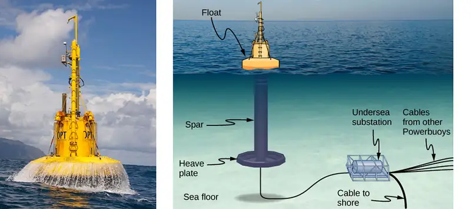
In this chapter, we study the physics of wave motion. We concentrate on mechanical waves, which are disturbances that move through a medium such as air or water. Like simple harmonic motion studied in the preceding chapter, the energy transferred through the medium is proportional to the amplitude squared. Surface water waves in the ocean are transverse waves in which the energy of the wave travels horizontally while the water oscillates up and down due to some restoring force. In the picture above, a buoy is used to convert the awesome power of ocean waves into electricity. The up-and-down motion of the buoy generated as the waves pass is converted into rotational motion that turns a rotor in an electric generator. The generator charges batteries, which are in turn used to provide a consistent energy source for the end user. This model was successfully tested by the US Navy in a project to provide power to coastal security networks and was able to provide an average power of 350 W. The buoy survived the difficult ocean environment, including operation off the New Jersey coast through Hurricane Irene in 2011.
The concepts presented in this chapter will be the foundation for many interesting topics, from the transmission of information to the concepts of quantum mechanics.
16.1 Traveling Waves¶
Learning Objectives
By the end of this section, you will be able to:
- Describe the basic characteristics of wave motion
- Define the terms wavelength, amplitude, period, frequency, and wave speed
- Explain the difference between longitudinal and transverse waves, and give examples of each type
- List the different types of waves
We saw in Oscillations that oscillatory motion is an important type of behavior that can be used to model a wide range of physical phenomena. Oscillatory motion is also important because oscillations can generate waves, which are of fundamental importance in physics. Many of the terms and equations we studied in the chapter on oscillations apply equally well to wave motion (Figure 16.2).
Types of Waves¶
A wave is a disturbance that propagates, or moves from the place it was created. There are three basic types of waves: mechanical waves, electromagnetic waves, and matter waves.
Basic mechanical waves are governed by Newton’s laws and require a medium. A medium is the substance mechanical waves propagate through, and the medium produces an elastic restoring force when it is deformed. Mechanical waves transfer energy and momentum, without transferring mass. Some examples of mechanical waves are water waves, sound waves, and seismic waves. The medium for water waves is water; for sound waves, the medium is usually air. (Sound waves can travel in other media as well; we will look at that in more detail in Sound.) For surface water waves, the disturbance occurs on the surface of the water, perhaps created by a rock thrown into a pond or by a swimmer splashing the surface repeatedly. For sound waves, the disturbance is a change in air pressure, perhaps created by the oscillating cone inside a speaker or a vibrating tuning fork. In both cases, the disturbance is the oscillation of the molecules of the fluid. In mechanical waves, energy and momentum transfer with the motion of the wave, whereas the mass oscillates around an equilibrium point. (We discuss this in Energy and Power of a Wave.) Earthquakes generate seismic waves from several types of disturbances, including the disturbance of Earth’s surface and pressure disturbances under the surface. Seismic waves travel through the solids and liquids that form Earth. In this chapter, we focus on mechanical waves.
Electromagnetic waves are associated with oscillations in electric and magnetic fields and do not require a medium. Examples include gamma rays, X-rays, ultraviolet waves, visible light, infrared waves, microwaves, and radio waves. Electromagnetic waves can travel through a vacuum at the speed of light, \(v=c=2.99792458\:\times\:{10}^{8}\:\text{m/s}.\) For example, light from distant stars travels through the vacuum of space and reaches Earth. Electromagnetic waves have some characteristics that are similar to mechanical waves; they are covered in more detail in Electromagnetic Waves.
Matter waves are a central part of the branch of physics known as quantum mechanics. These waves are associated with protons, electrons, neutrons, and other fundamental particles found in nature. The theory that all types of matter have wave-like properties was first proposed by Louis de Broglie in 1924. Matter waves are discussed in Photons and Matter Waves.
Mechanical Waves¶
Mechanical waves exhibit characteristics common to all waves, such as amplitude, wavelength, period, frequency, and energy. All wave characteristics can be described by a small set of underlying principles.
The simplest mechanical waves repeat themselves for several cycles and are associated with simple harmonic motion. These simple harmonic waves can be modeled using some combination of sine and cosine functions. For example, consider the simplified surface water wave that moves across the surface of water as illustrated in Figure 16.3. Unlike complex ocean waves, in surface water waves, the medium, in this case water, moves vertically, oscillating up and down, whereas the disturbance of the wave moves horizontally through the medium. In Figure 16.3, the waves causes a seagull to move up and down in simple harmonic motion as the wave crests and troughs (peaks and valleys) pass under the bird. The crest is the highest point of the wave, and the trough is the lowest part of the wave. The time for one complete oscillation of the up-and-down motion is the wave’s period T. The wave’s frequency is the number of waves that pass through a point per unit time and is equal to \(f=1\text{/}T.\) The period can be expressed using any convenient unit of time but is usually measured in seconds; frequency is usually measured in hertz (Hz), where \(1\:{\text{Hz}=1\:\text{s}}^{-1}.\)
The length of the wave is called the wavelength and is represented by the Greek letter lambda \((\lambda)\), which is measured in any convenient unit of length, such as a centimeter or meter. The wavelength can be measured between any two similar points along the medium that have the same height and the same slope. In Figure 16.3, the wavelength is shown measured between two crests. As stated above, the period of the wave is equal to the time for one oscillation, but it is also equal to the time for one wavelength to pass through a point along the wave’s path.
The amplitude of the wave (A) is a measure of the maximum displacement of the medium from its equilibrium position. In the figure, the equilibrium position is indicated by the dotted line, which is the height of the water if there were no waves moving through it. In this case, the wave is symmetrical, the crest of the wave is a distance \(\text{+}A\) above the equilibrium position, and the trough is a distance \(-A\) below the equilibrium position. The units for the amplitude can be centimeters or meters, or any convenient unit of distance.
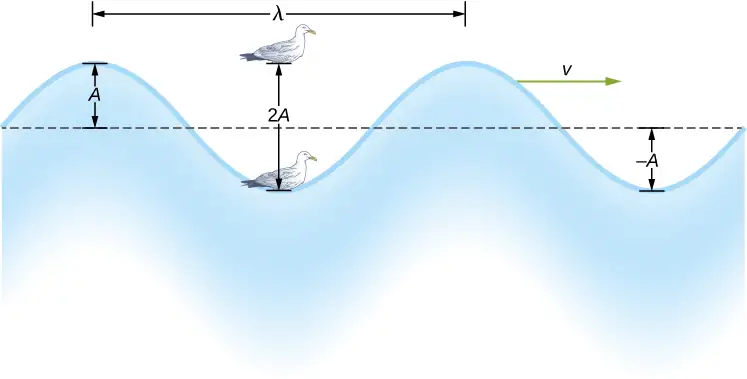
The water wave in the figure moves through the medium with a propagation velocity \(\mathbf{\vec{v}}.\) The magnitude of the wave velocity is the distance the wave travels in a given time, which is one wavelength in the time of one period, and the wave speed is the magnitude of wave velocity. In equation form, this is
equation callout
This fundamental relationship holds for all types of waves. For water waves, v is the speed of a surface wave; for sound, v is the speed of sound; and for visible light, v is the speed of light.
Transverse and Longitudinal Waves¶
We have seen that a simple mechanical wave consists of a periodic disturbance that propagates from one place to another through a medium. In Figure 16.4(a), the wave propagates in the horizontal direction, whereas the medium is disturbed in the vertical direction. Such a wave is called a transverse wave. In a transverse wave, the wave may propagate in any direction, but the disturbance of the medium is perpendicular to the direction of propagation. In contrast, in a longitudinal wave or compressional wave, the disturbance is parallel to the direction of propagation. Figure 16.4(b) shows an example of a longitudinal wave. The size of the disturbance is its amplitude A and is completely independent of the speed of propagation v.
![Figure a, labeled transverse wave, shows a person holding one end of a long, horizontally placed spring and moving it up and down. The spring forms a wave which propagates away from the person. This is labeled transverse wave. The vertical distance between the crest of the wave and the equilibrium position of the spring is labeled A. Figure b, labeled longitudinal wave, shows the person moving the spring to and fro horizontally. The spring is compressed and elongated alternately. This is labeled longitudinal wave. The horizontal distance from the middle of one compression to the middle of one rarefaction is labeled A.](img/cnx-uphysics-16-01-girlwave.webp)
A simple graphical representation of a section of the spring shown in Figure 16.4(b) is shown in Figure 16.5. Figure 16.5(a) shows the equilibrium position of the spring before any waves move down it. A point on the spring is marked with a blue dot. Figure 16.5(b) through (g) show snapshots of the spring taken one-quarter of a period apart, sometime after the end of` the spring is oscillated back and forth in the x-direction at a constant frequency. The disturbance of the wave is seen as the compressions and the expansions of the spring. Note that the blue dot oscillates around its equilibrium position a distance A, as the longitudinal wave moves in the positive x-direction with a constant speed. The distance A is the amplitude of the wave. The y-position of the dot does not change as the wave moves through the spring. The wavelength of the wave is measured in part (d). The wavelength depends on the speed of the wave and the frequency of the driving force.
![Figures a through g show different stages of a longitudinal wave passing through a spring. A blue dot marks a point on the spring. This moves from left to right as the wave propagates towards the right. In figure b at time t=0, the dot is to the right of the equilibrium position. In figure d, at time t equal to half T, the dot is to the left of the equilibrium position. In figure f, at time t=T, the dot is again to the right. The distance between the equilibrium position and the extreme left or right position of the dot is the same and is labeled A. The distance between two identical parts of the wave is labeled lambda.](img/cnx-uphysics-16-01-longwave.webp)
Waves may be transverse, longitudinal, or a combination of the two. Examples of transverse waves are the waves on stringed instruments or surface waves on water, such as ripples moving on a pond. Sound waves in air and water are longitudinal. With sound waves, the disturbances are periodic variations in pressure that are transmitted in fluids. Fluids do not have appreciable shear strength, and for this reason, the sound waves in them are longitudinal waves. Sound in solids can have both longitudinal and transverse components, such as those in a seismic wave. Earthquakes generate seismic waves under Earth’s surface with both longitudinal and transverse components (called compressional or P-waves and shear or S-waves, respectively). The components of seismic waves have important individual characteristics—they propagate at different speeds, for example. Earthquakes also have surface waves that are similar to surface waves on water. Ocean waves also have both transverse and longitudinal components.
Example 16.1 Wave on a String
A student takes a 30.00-m-long string and attaches one end to the wall in the physics lab. The student then holds the free end of the rope, keeping the tension constant in the rope. The student then begins to send waves down the string by moving the end of the string up and down with a frequency of 2.00 Hz. The maximum displacement of the end of the string is 20.00 cm. The first wave hits the lab wall 6.00 s after it was created. (a) What is the speed of the wave? (b) What is the period of the wave? (c) What is the wavelength of the wave?
Strategy
- The speed of the wave can be derived by dividing the distance traveled by the time.
- The period of the wave is the inverse of the frequency of the driving force.
- The wavelength can be found from the speed and the period \(v=\lambda\text{/}T.\)
Solution
a. The first wave traveled 30.00 m in 6.00 s:
b. The period is equal to the inverse of the frequency:
c. The wavelength is equal to the velocity times the period:
Significance
The frequency of the wave produced by an oscillating driving force is equal to the frequency of the driving force.
Check Your Understanding
When a guitar string is plucked, the guitar string oscillates as a result of waves moving through the string. The vibrations of the string cause the air molecules to oscillate, forming sound waves. The frequency of the sound waves is equal to the frequency of the vibrating string. Is the wavelength of the sound wave always equal to the wavelength of the waves on the string?
Answer
The wavelength of the waves depends on the frequency and the velocity of the wave. The frequency of the sound wave is equal to the frequency of the wave on the string. The wavelengths of the sound waves and the waves on the string are equal only if the velocities of the waves are the same, which is not always the case. If the speed of the sound wave is different from the speed of the wave on the string, the wavelengths are different. This velocity of sound waves will be discussed in Sound.
Example 16.2 Characteristics of a Wave
A transverse mechanical wave propagates in the positive x-direction through a spring (as shown in Figure 16.4(a)) with a constant wave speed, and the medium oscillates between \(\text{+}A\) and \(-A\) around an equilibrium position. The graph in Figure 16.6 shows the height of the spring (y) versus the position (x), where the x-axis points in the direction of propagation. The figure shows the height of the spring versus the x-position at \(t=0.00\:\text{s}\) as a dotted line and the wave at \(t=3.00\:\text{s}\) as a solid line. Assume the wave has not traveled more than 1 wavelength in this time. (a) Determine the wavelength and amplitude of the wave. (b) Find the propagation velocity of the wave. (c) Calculate the period and frequency of the wave.
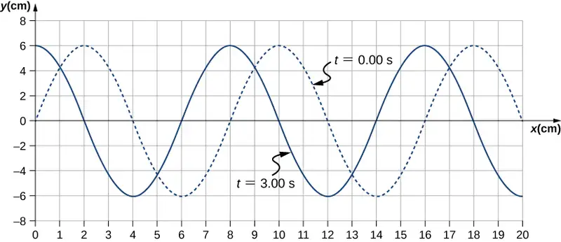
Strategy
- The amplitude and wavelength can be determined from the graph.
- Since the velocity is constant, the velocity of the wave can be found by dividing the distance traveled by the wave by the time it took the wave to travel the distance.
- The period can be found from \(v=\frac{\lambda}{T}\) and the frequency from \(f=\frac{1}{T}.\)
Solution
a. Read the wavelength from the graph, looking at the purple arrow in Figure 16.7. Read the amplitude by looking at the green arrow. The wavelength is \(\lambda=8.00\:\text{cm}\) and the amplitude is \(A=6.00\:\text{cm}.\)
![Figure shows two transverse waves whose y values vary from -6 cm to 6 cm. One wave, marked t=0 seconds is shown as a dotted line. It has crests at x equal to 2, 10 and 18 cm. The other wave, marked t=3 seconds is shown as a solid line. It has crests at x equal to 0, 8 and 16 cm. The horizontal distance between two consecutive crests is labeled wavelength. This is from x=2 cm to x=10 cm. The vertical distance from the equilibrium position to the crest is labeled amplitude. This is from y=0 cm to y=6 cm. A red arrow is labeled distance travelled. This is from x=2 cm to x=8 cm.](img/cnx-uphysics-16-01-waveeb-replaced.webp)
b. The distance the wave traveled from time \(t=0.00\:\text{s}\) to time \(t=3.00\:\text{s}\) can be seen in the graph. Consider the red arrow, which shows the distance the crest has moved in 3 s. The distance is \(8.00\:\text{cm}-2.00\:\text{cm}=6.00\:\text{cm}.\) The velocity is
c. The period is \(T=\frac{\lambda}{v}=\frac{8.00\:\text{cm}}{2.00\:\text{cm/s}}=4.00\:\text{s}\) and the frequency is \(f=\frac{1}{T}=\frac{1}{4.00\:\text{s}}=0.25\:\text{Hz}.\)
Significance
Note that the wavelength can be found using any two successive identical points that repeat, having the same height and slope. You should choose two points that are most convenient. The displacement can also be found using any convenient point.
Check Your Understanding
The propagation velocity of a transverse or longitudinal mechanical wave may be constant as the wave disturbance moves through the medium. Consider a transverse mechanical wave: Is the velocity of the medium also constant?
Answer
In a transverse wave, the wave may move at a constant propagation velocity through the medium, but the medium oscillates perpendicular to the motion of the wave. If the wave moves in the positive x-direction, the medium oscillates up and down in the y-direction. The velocity of the medium is therefore not constant, but the medium’s velocity and acceleration are similar to that of the simple harmonic motion of a mass on a spring.
16.2 Mathematics of Waves¶
Learning Objectives
By the end of this section, you will be able to:
- Model a wave, moving with a constant wave velocity, with a mathematical expression
- Calculate the velocity and acceleration of the medium
- Show how the velocity of the medium differs from the wave velocity (propagation velocity)
In the previous section, we described periodic waves by their characteristics of wavelength, period, amplitude, and wave speed of the wave. Waves can also be described by the motion of the particles of the medium through which the waves move. The position of particles of the medium can be mathematically modeled as wave functions, which can be used to find the position, velocity, and acceleration of the particles of the medium of the wave at any time.
Pulses¶
A pulse can be described as wave consisting of a single disturbance that moves through the medium with a constant amplitude. The pulse moves as a pattern that maintains its shape as it propagates with a constant wave speed. Because the wave speed is constant, the distance the pulse moves in a time \(\Delta t\) is equal to \(\Delta x=v\Delta t\) (Figure 16.8).
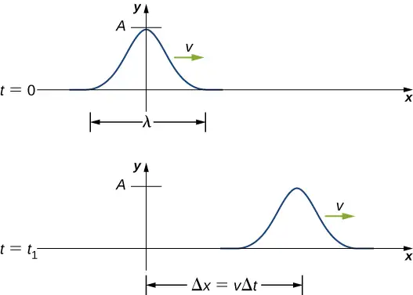
Modeling a One-Dimensional Sinusoidal Wave using a Wave Function¶
Consider a string kept at a constant tension \(F_{T}\) where one end is fixed and the free end is oscillated between \(y=\text{+}A\) and \(y=-A\) by a mechanical device at a constant frequency. Figure 16.9 shows snapshots of the wave at an interval of an eighth of a period, beginning after one period \((t=T).\)
![Figure shows different stages of a transverse wave propagating towards the right, taken at intervals of 1 by 8 T. Dots mark points on the wave. These move up and down from – A to +A. A dot that is at the equilibrium position at time t=T, moves to +A at time t=T plus 2 by 8 T. It then moves back to the equilibrium position at time t= T plus 4 by 8 T. It moves to –A at time t=T plus 6 by 8 T and back to the equilibrium position at time t=2T. Similarly, all dots move to their original positions at time t=2T.](img/cnx-uphysics-16-02-string.webp)
Notice that each select point on the string (marked by colored dots) oscillates up and down in simple harmonic motion, between \(y=+A\) and \(y=-A,\) with a period T. The wave on the string is sinusoidal and is translating in the positive x-direction as time progresses.
At this point, it is useful to recall from your study of algebra that if f(x) is some function, then \(f(x-d)\) is the same function translated in the positive x-direction by a distance d. The function \(f(x+d)\) is the same function translated in the negative x-direction by a distance d. We want to define a wave function that will give the y-position of each segment of the string for every position x along the string for every time t.
Looking at the first snapshot in Figure 16.9, the y-position of the string between \(x=0\) and \(x=\lambda\) can be modeled as a sine function. This wave propagates down the string one wavelength in one period, as seen in the last snapshot. The wave therefore moves with a constant wave speed of \(v=\lambda\text{/}T.\)
Recall that a sine function is a function of the angle \(\theta\), oscillating between \(\text{+}1\) and \(-1\), and repeating every \(2\pi\) radians (Figure 16.10). However, the y-position of the medium, or the wave function, oscillates between \(\text{+}A\) and \(-A\), and repeats every wavelength \(\lambda\).
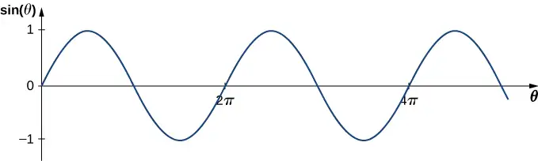
To construct our model of the wave using a periodic function, consider the ratio of the angle and the position,
Using \(\theta=\frac{2\pi}{\lambda}x\) and multiplying the sine function by the amplitude A, we can now model the y-position of the string as a function of the position x:
The wave on the string travels in the positive x-direction with a constant velocity v, and moves a distance vt in a time t. The wave function can now be defined by
It is often convenient to rewrite this wave function in a more compact form. Multiplying through by the ratio \(\frac{2\pi}{\lambda}\) leads to the equation
The value \(\frac{2\pi}{\lambda}\) is defined as the wave number. The symbol for the wave number is k and has units of inverse meters, \(\text{m}^{-1}:\)
equation callout
Recall from Oscillations that the angular frequency is defined as \(\omega\equiv\frac{2\pi}{T}.\) The second term of the wave function becomes
The wave function for a simple harmonic wave on a string reduces to
where A is the amplitude, \(k=\frac{2\pi}{\lambda}\) is the wave number, \(\omega=\frac{2\pi}{T}\) is the angular frequency, the minus sign is for waves moving in the positive x-direction, and the plus sign is for waves moving in the negative x-direction. The velocity of the wave is equal to
equation callout
Think back to our discussion of a mass on a spring, when the position of the mass was modeled as \(x(t)=A\:\cos(\omega t+\phi).\) The angle \(\phi\) is a phase shift, added to allow for the fact that the mass may have initial conditions other than \(x=\text{+}A\) and \(v=0.\) For similar reasons, the initial phase is added to the wave function. The wave function modeling a sinusoidal wave, allowing for an initial phase shift \(\phi,\) is
equation callout
The value
equation callout
is known as the phase of the wave, where \(\phi\) is the initial phase of the wave function. Whether the temporal term \(\omega t\) is negative or positive depends on the direction of the wave. First consider the minus sign for a wave with an initial phase equal to zero \((\phi=0).\) The phase of the wave would be \((kx-\omega t).\) Consider following a point on a wave, such as a crest. A crest will occur when \(\sin\:(kx-\omega t)=1.00\), that is, when \(kx-\omega t=n\pi+\frac{\pi}{2},\) for any integral value of n. For instance, one particular crest occurs at \(kx-\omega t=\frac{\pi}{2}.\) As the wave moves, time increases and x must also increase to keep the phase equal to \(\frac{\pi}{2}.\) Therefore, the minus sign is for a wave moving in the positive x-direction. Using the plus sign, \(kx+\omega t=\frac{\pi}{2}.\) As time increases, x must decrease to keep the phase equal to \(\frac{\pi}{2}.\) The plus sign is used for waves moving in the negative x-direction. In summary, \(y(x,t)=A\:\sin(kx-\omega t+\phi)\) models a wave moving in the positive x-direction and \(y(x,t)=A\:\sin(kx+\omega t+\phi)\) models a wave moving in the negative x-direction.
Equation 16.4 is known as a simple harmonic wave function. A wave function is any function such that \(f(x,t)=f(x-vt).\) Later in this chapter, we will see that it is a solution to the linear wave equation. Note that \(y(x,t)=A\:\cos(kx+\omega t+\phi')\) works equally well because it corresponds to a different phase shift \(\phi'=\phi-\frac{\pi}{2}.\)
Problem-Solving Strategy: Finding the Characteristics of a Sinusoidal Wave
- To find the amplitude, wavelength, period, and frequency of a sinusoidal wave, write down the wave function in the form \(y(x,t)=A\:\sin(kx-\omega t+\phi).\)
- The amplitude can be read straight from the equation and is equal to A.
- The period of the wave can be derived from the angular frequency \(\left( T=\frac{2\pi}{\omega} \right).\)
- The frequency can be found using \(f=\frac{1}{T}.\)
- The wavelength can be found using the wave number \(\left( \lambda=\frac{2\pi}{k} \right).\)
Example 16.3 Characteristics of a Traveling Wave on a String
A transverse wave on a taut string is modeled with the wave function
Find the amplitude, wavelength, period, and speed of the wave.
Strategy
All these characteristics of the wave can be found from the constants included in the equation or from simple combinations of these constants.
Solution
-
The amplitude, wave number, and angular frequency can be read directly from the wave equation:
\[ y(x,t)=A\:\sin(kx-\omega t)=0.2\:\text{m}\:\sin(6.28\:\text{m}^{-1}x-1.57\:\text{s}^{-1}t). \]\[ (A=0.2\:\text{m;}\:k=6.28\:\text{m}^{-1};\:\omega=1.57\:\text{s}^{-1}) \] -
The wave number can be used to find the wavelength:
\[ \begin{array}{c} k=\frac{2\pi}{\lambda}. \\ \lambda=\frac{2\pi}{k}=\frac{2\pi}{6.28\:\text{m}^{-1}}=1.0\:\text{m}. \end{array} \] -
The period of the wave can be found using the angular frequency:
\[ \begin{array}{c} \omega=\frac{2\pi}{T}. \\ T=\frac{2\pi}{\omega}=\frac{2\pi}{1.57\:\text{s}^{-1}}=4\:\text{s}. \end{array} \] -
The speed of the wave can be found using the wave number and the angular frequency. The direction of the wave can be determined by considering the sign of \(kx\mp\omega t\): A negative sign suggests that the wave is moving in the positive x-direction:
\[ |v|=\frac{\omega}{k}=\frac{1.57\:\text{s}^{-1}}{6.28\:\text{m}^{-1}}=0.25\:\text{m/s}. \]
Significance
All of the characteristics of the wave are contained in the wave function. Note that the wave speed is the speed of the wave in the direction parallel to the motion of the wave. Plotting the height of the medium y versus the position x for two times \(t=0.00\:\text{s}\) and \(t=0.80\:\text{s}\) can provide a graphical visualization of the wave (Figure 16.11).
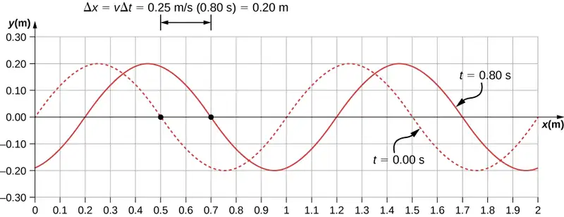
There is a second velocity to the motion. In this example, the wave is transverse, moving horizontally as the medium oscillates up and down perpendicular to the direction of motion. The graph in Figure 16.12 shows the motion of the medium at point \(x=0.60\:\text{m}\) as a function of time. Notice that the medium of the wave oscillates up and down between \(y=+0.20\:\text{m}\) and \(y=-0.20\:\text{m}\) every period of 4.0 seconds.
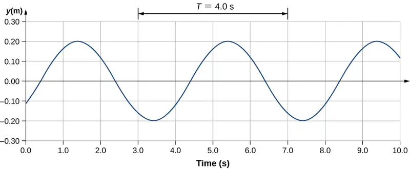
Check Your Understanding
The wave function above is derived using a sine function. Can a cosine function be used instead?
Answer
Yes, a cosine function is equal to a sine function with a phase shift, and either function can be used in a wave function. Which function is more convenient to use depends on the initial conditions. In Figure 16.11, the wave has an initial height of \(\text{y}(0.00,0.00)=0\) and then the wave height increases to the maximum height at the crest. If the initial height at the initial time was equal to the amplitude of the wave \(\text{y}(0.00,0.00)=\text{+}A,\) then it might be more convenient to model the wave with a cosine function.
Velocity and Acceleration of the Medium¶
As seen in Example 16.4, the wave speed is constant and represents the speed of the wave as it propagates through the medium, not the speed of the particles that make up the medium. The particles of the medium oscillate around an equilibrium position as the wave propagates through the medium. In the case of the transverse wave propagating in the x-direction, the particles oscillate up and down in the y-direction, perpendicular to the motion of the wave. The velocity of the particles of the medium is not constant, which means there is an acceleration. The velocity of the medium, which is perpendicular to the wave velocity in a transverse wave, can be found by taking the partial derivative of the position equation with respect to time. The partial derivative is found by taking the derivative of the function, treating all variables as constants, except for the variable in question. In the case of the partial derivative with respect to time t, the position x is treated as a constant. Although this may sound strange if you haven’t seen it before, the object of this exercise is to find the transverse velocity at a point, so in this sense, the x-position is not changing. We have
The magnitude of the maximum velocity of the medium is \(|v_{y_{\max}}|=A\omega\). This may look familiar from the Oscillations and a mass on a spring.
We can find the acceleration of the medium by taking the partial derivative of the velocity equation with respect to time,
The magnitude of the maximum acceleration is \(|a_{y_{\max}}|=A\omega^{2}.\) The particles of the medium, or the mass elements, oscillate in simple harmonic motion for a mechanical wave.
The Linear Wave Equation¶
We have just determined the velocity of the medium at a position x by taking the partial derivative, with respect to time, of the position y. For a transverse wave, this velocity is perpendicular to the direction of propagation of the wave. We found the acceleration by taking the partial derivative, with respect to time, of the velocity, which is the second time derivative of the position:
Now consider the partial derivatives with respect to the other variable, the position x, holding the time constant. The first derivative is the slope of the wave at a point x at a time t,
The second partial derivative expresses how the slope of the wave changes with respect to position—in other words, the curvature of the wave, where
The ratio of the acceleration and the curvature leads to a very important relationship in physics known as the linear wave equation. Taking the ratio and using the equation \(v=\omega\text{/}k\) yields the linear wave equation (also known simply as the wave equation or the equation of a vibrating string),
equation callout
Equation 16.6 is the linear wave equation, which is one of the most important equations in physics and engineering. We derived it here for a transverse wave, but it is equally important when investigating longitudinal waves. This relationship was also derived using a sinusoidal wave, but it successfully describes any wave or pulse that has the form \(y(x,t)=f(x\mp vt).\) These waves result due to a linear restoring force of the medium—thus, the name linear wave equation. Any wave function that satisfies this equation is a linear wave function.
An interesting aspect of the linear wave equation is that if two wave functions are individually solutions to the linear wave equation, then the sum of the two linear wave functions is also a solution to the wave equation. Consider two transverse waves that propagate along the x-axis, occupying the same medium. Assume that the individual waves can be modeled with the wave functions \(y_{1}(x,t)=f(x\mp vt)\) and \(y_{2}(x,t)=g(x\mp vt),\) which are solutions to the linear wave equations and are therefore linear wave functions. The sum of the wave functions is the wave function
Consider the linear wave equation:
This has shown that if two linear wave functions are added algebraically, the resulting wave function is also linear. This wave function models the displacement of the medium of the resulting wave at each position along the x-axis. If two linear waves occupy the same medium, they are said to interfere. If these waves can be modeled with a linear wave function, these wave functions add to form the wave equation of the wave resulting from the interference of the individual waves. The displacement of the medium at every point of the resulting wave is the algebraic sum of the displacements due to the individual waves.
Taking this analysis a step further, if wave functions \(y_{1}(x,t)=f(x\mp vt)\) and \(y_{2}(x,t)=g(x\mp vt)\) are solutions to the linear wave equation, then \(Ay_{1}(x,t)+By_{2}(x,t),\) where A and B are constants, is also a solution to the linear wave equation. This property is known as the principle of superposition. Interference and superposition are covered in more detail in Interference of Waves.
Example 16.4 Interference of Waves on a String
Consider a very long string held taut by two students, one on each end. Student A oscillates the end of the string producing a wave modeled with the wave function \(y_{1}(x,t)=A\:\sin(kx-\omega t)\) and student B oscillates the string producing at twice the frequency, moving in the opposite direction. Both waves move at the same speed \(v=\frac{\omega}{k}.\) The two waves interfere to form a resulting wave whose wave function is \(y_{R}(x,t)=y_{1}(x,t)+y_{2}(x,t).\) Find the velocity of the resulting wave using the linear wave equation \(\frac{\partial^{2}y(x,t)}{\partial x^{2}}=\frac{1}{v^{2}}\:\frac{\partial^{2}y(x,t)}{\partial t^{2}}.\)
Strategy
First, write the wave function for the wave created by the second student. Note that the angular frequency of the second wave is twice the frequency of the first wave \((2\omega)\), and since the velocity of the two waves are the same, the wave number of the second wave is twice that of the first wave \((2k).\) Next, write the wave equation for the resulting wave function, which is the sum of the two individual wave functions. Then find the second partial derivative with respect to position and the second partial derivative with respect to time. Use the linear wave equation to find the velocity of the resulting wave.
Solution
-
Write the wave function of the second wave: \(y_{2}(x,t)=A\:\sin(2kx+2\omega t).\)
-
Write the resulting wave function:
\[ y_{R}(x,t)=y_{1}(x,t)+y(x,t)=A\:\sin(kx-\omega t)+A\:\sin(2kx+2\omega t). \] -
Find the partial derivatives:
\[ \begin{array}{ccc} \frac{\partial y_{R}(x,t)}{\partial x} & = & \text{+}Ak\:\cos(kx-\omega t)+2Ak\:\cos(2kx+2\omega t), \\ \frac{\partial^{2}y_{R}(x,t)}{\partial x^{2}} & = & -Ak^{2}\:\sin(kx-\omega t)-4Ak^{2}\:\sin(2kx+2\omega t), \\ \frac{\partial y_{R}(x,t)}{\partial t} & = & -A\omega\:\cos(kx-\omega t)+2A\omega\:\cos(2kx+2\omega t), \\ \frac{\partial^{2}y_{R}(x,t)}{\partial t^{2}} & = & -A\omega^{2}\:\sin(kx-\omega t)-4A\omega^{2}\:\sin(2kx+2\omega t). \end{array} \] -
Use the wave equation to find the velocity of the resulting wave:
\(\begin{array}{ccc} \frac{\partial^{2}y(x,t)}{\partial x^{2}} & = & \frac{1}{v^{2}}\:\frac{\partial^{2}y(x,t)}{\partial t^{2}}, \\ -Ak^{2}\:\sin(kx-\omega t)-4Ak^{2}\:\sin(2kx+2\omega t) & = & \frac{1}{v^{2}}(-A\omega^{2}\:\sin(kx-\omega t)-4A\omega^{2}\:\sin(2kx+2\omega t)), \\ k^{2}(-A\:\sin(kx-\omega t)-4A\:\sin(2kx+2\omega t)) & = & \frac{\omega^{2}}{v^{2}}(-A\:\sin(kx-\omega t)-4A\:\sin(2kx+2\omega t)), \\ k^{2} & = & \frac{\omega^{2}}{v^{2}},\:|v|=\frac{\omega}{k}. \end{array}\)
Significance
The speed of the resulting wave is equal to the speed of the original waves \(\left( v=\frac{\omega}{k} \right).\) We will show in the next section that the speed of a simple harmonic wave on a string depends on the tension in the string and the mass per length of the string. For this reason, it is not surprising that the component waves as well as the resultant wave all travel at the same speed.
Check Your Understanding
The wave equation \(\frac{\partial^{2}y(x,t)}{\partial x^{2}}=\frac{1}{v^{2}}\:\frac{\partial^{2}y(x,t)}{\partial t^{2}}\) works for any wave of the form \(y(x,t)=f(x\mp vt).\) In the previous section, we stated that a cosine function could also be used to model a simple harmonic mechanical wave. Check if the wave
is a solution to the wave equation.
Answer
This wave, with amplitude \(A=0.5\:\text{m},\) wavelength \(\lambda=10.00\:\text{m},\) period \(T=0.50\:\text{s},\) is a solution to the wave equation with a wave velocity \(v=20.00\:\text{m/s}.\)
Any disturbance that complies with the wave equation can propagate as a wave moving along the x-axis with a wave speed v. It works equally well for waves on a string, sound waves, and electromagnetic waves. This equation is extremely useful. For example, it can be used to show that electromagnetic waves move at the speed of light.
16.3 Wave Speed on a Stretched String¶
Learning Objectives
By the end of this section, you will be able to:
- Determine the factors that affect the speed of a wave on a string
- Write a mathematical expression for the speed of a wave on a string and generalize these concepts for other media
The speed of a wave depends on the characteristics of the medium. For example, in the case of a guitar, the strings vibrate to produce the sound. The speed of the waves on the strings, and the wavelength, determine the frequency of the sound produced. The strings on a guitar have different thickness but may be made of similar material. They have different linear densities, where the linear density is defined as the mass per length,
equation callout
In this chapter, we consider only strings with a constant linear density. If the linear density is constant, then the mass \((\Delta m)\) of a small length of string \((\Delta x)\) is \(\Delta m=\mu\Delta x.\) For example, if the string has a length of 2.00 m and a mass of 0.06 kg, then the linear density is \(\mu=\frac{0.06\:\text{kg}}{2.00\:\text{m}}=0.03\frac{\text{kg}}{\text{m}}.\) If a 1.00-mm section is cut from the string, the mass of the 1.00-mm length is \(\Delta m=\mu\Delta x=\left( 0.03\frac{\text{kg}}{\text{m}} \right)0.001\:\text{m}=3.00\:\times\:{10}^{-5}\:\text{kg}.\) The guitar also has a method to change the tension of the strings. The tension of the strings is adjusted by turning spindles, called the tuning pegs, around which the strings are wrapped. For the guitar, the linear density of the string and the tension in the string determine the speed of the waves in the string and the frequency of the sound produced is proportional to the wave speed.
Wave Speed on a String under Tension¶
To see how the speed of a wave on a string depends on the tension and the linear density, consider a pulse sent down a taut string (Figure 16.13). When the taut string is at rest at the equilibrium position, the tension in the string \(F_{T}\) is constant. Consider a small element of the string with a mass equal to \(\Delta m=\mu\Delta x.\) The mass element is at rest and in equilibrium and the force of tension of either side of the mass element is equal and opposite.
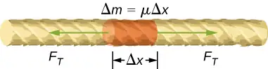
If you pluck a string under tension, a transverse wave moves in the positive x-direction, as shown in Figure 16.14. The mass element is small but is enlarged in the figure to make it visible. The small mass element oscillates perpendicular to the wave motion as a result of the restoring force provided by the string and does not move in the x-direction. The tension \(F_{T}\) in the string, which acts in the positive and negative x-direction, is approximately constant and is independent of position and time.
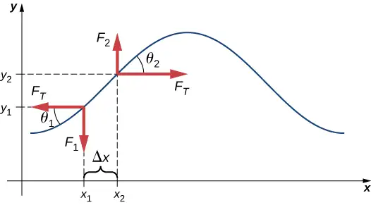
Assume that the inclination of the displaced string with respect to the horizontal axis is small. The net force on the element of the string, acting parallel to the string, is the sum of the tension in the string and the restoring force. The x-components of the force of tension cancel, so the net force is equal to the sum of the y-components of the force. The magnitude of the x-component of the force is equal to the horizontal force of tension of the string \(F_{T}\) as shown in Figure 16.14. To obtain the y-components of the force, note that \(\tan\:\theta_{1}=\frac{-F_{1}}{F_{T}}\) and \(\tan\:\theta_{2}=\frac{F_{2}}{F_{T}}.\) The \(\tan\:\theta\) is equal to the slope of a function at a point, which is equal to the partial derivative of y with respect to x at that point. Therefore, \(\frac{F_{1}}{F_{T}}\) is equal to the negative slope of the string at \(x_{1}\) and \(\frac{F_{2}}{F_{T}}\) is equal to the slope of the string at \(x_{2}:\)
The net force on the small mass element can be written as
Using Newton’s second law, the net force is equal to the mass times the acceleration. The linear density of the string \(\mu\) is the mass per length of the string, and the mass of the portion of the string is \(\mu\Delta x\),
Dividing by \(F_{T}\Delta x\) and taking the limit as \(\Delta x\) approaches zero,
Recall that the linear wave equation is
Therefore,
Solving for v, we see that the speed of the wave on a string depends on the tension and the linear density.
Speed of a Wave on a String Under Tension
The speed of a pulse or wave on a string under tension can be found with the equation
where \(F_{T}\) is the tension in the string and \(\mu\) is the mass per length of the string.
Example 16.5 The Wave Speed of a Guitar String
On a six-string guitar, the high E string has a linear density of \(\mu_{\text{High E}}=3.09\:\times\:{10}^{-4}\:\text{kg/m}\) and the low E string has a linear density of \(\mu_{\text{Low E}}=5.78\:\times\:{10}^{-3}\:\text{kg/m}.\) (a) If the high E string is plucked, producing a wave in the string, what is the speed of the wave if the tension of the string is 56.40 N? (b) The linear density of the low E string is approximately 20 times greater than that of the high E string. For waves to travel through the low E string at the same wave speed as the high E, would the tension need to be larger or smaller than the high E string? What would be the approximate tension? (c) Calculate the tension of the low E string needed for the same wave speed.
Strategy
- The speed of the wave can be found from the linear density and the tension \(v=\sqrt{\frac{F_{T}}{\mu}}.\)
- From the equation \(v=\sqrt{\frac{F_{T}}{\mu}},\) if the linear density is increased by a factor of almost 20, the tension would need to be increased by a factor of 20.
- Knowing the velocity and the linear density, the velocity equation can be solved for the force of tension \(F_{T}=\mu v^{2}.\)
Solution
a. Use the velocity equation to find the speed:
b. The tension would need to be increased by a factor of approximately 20. The tension would be slightly less than 1128 N.
c. Use the velocity equation to find the actual tension:
This solution is within \(7\text{\%}\) of the approximation.
Significance
The standard notes of the six string (high E, B, G, D, A, low E) are tuned to vibrate at the fundamental frequencies (329.63 Hz, 246.94Hz, 196.00Hz, 146.83Hz, 110.00Hz, and 82.41Hz) when plucked. The frequencies depend on the speed of the waves on the string and the wavelength of the waves. The six strings have different linear densities and are “tuned” by changing the tensions in the strings. We will see in Interference of Waves that the wavelength depends on the length of the strings and the boundary conditions. To play notes other than the fundamental notes, the lengths of the strings are changed by pressing down on the strings.
Check Your Understanding
The wave speed of a wave on a string depends on the tension and the linear mass density. If the tension is doubled, what happens to the speed of the waves on the string?
Answer
Since the speed of a wave on a taunt string is proportional to the square root of the tension divided by the linear density, the wave speed would increase by \(\sqrt{2}.\)
Speed of Compression Waves in a Fluid¶
The speed of a wave on a string depends on the square root of the tension divided by the mass per length, the linear density. In general, the speed of a wave through a medium depends on the elastic property of the medium and the inertial property of the medium.
The elastic property describes the tendency of the particles of the medium to return to their initial position when perturbed. The inertial property describes the tendency of the particle to resist changes in velocity.
The speed of a longitudinal wave through a liquid or gas depends on the density of the fluid and the bulk modulus of the fluid,
equation callout
Here the bulk modulus is defined as \(B=-\frac{\Delta P}{{\Delta V}/{V_{0}}},\) where \(\Delta P\) is the change in the pressure and the denominator is the ratio of the change in volume to the initial volume, and \(\rho\equiv\frac{m}{V}\) is the mass per unit volume. For example, sound is a mechanical wave that travels through a fluid or a solid. The speed of sound in air with an atmospheric pressure of \(1.013\:\times\:{10}^{5}\:\text{Pa}\) and a temperature of \(20{}^{\circ}\text{C}\) is \(v_{\text{s}}\approx 343.00\:\text{m/s}.\) Because the density depends on temperature, the speed of sound in air depends on the temperature of the air. This will be discussed in detail in Sound.
16.4 Energy and Power of a Wave¶
Learning Objectives
By the end of this section, you will be able to:
- Explain how energy travels with a pulse or wave
- Describe, using a mathematical expression, how the energy in a wave depends on the amplitude of the wave
All waves carry energy, and sometimes this can be directly observed. Earthquakes can shake whole cities to the ground, performing the work of thousands of wrecking balls (Figure 16.15). Loud sounds can pulverize nerve cells in the inner ear, causing permanent hearing loss. Ultrasound is used for deep-heat treatment of muscle strains. A laser beam can burn away a malignancy. Water waves chew up beaches.
In this section, we examine the quantitative expression of energy in waves. This will be of fundamental importance in later discussions of waves, from sound to light to quantum mechanics.
Energy in Waves¶
The amount of energy in a wave is related to its amplitude and its frequency. Large-amplitude earthquakes produce large ground displacements. Loud sounds have high-pressure amplitudes and come from larger-amplitude source vibrations than soft sounds. Large ocean breakers churn up the shore more than small ones. Consider the example of the seagull and the water wave earlier in the chapter (Figure 16.3). Work is done on the seagull by the wave as the seagull is moved up, changing its potential energy. The larger the amplitude, the higher the seagull is lifted by the wave and the larger the change in potential energy.
The energy of the wave depends on both the amplitude and the frequency. If the energy of each wavelength is considered to be a discrete packet of energy, a high-frequency wave will deliver more of these packets per unit time than a low-frequency wave. We will see that the average rate of energy transfer in mechanical waves is proportional to both the square of the amplitude and the square of the frequency. If two mechanical waves have equal amplitudes, but one wave has a frequency equal to twice the frequency of the other, the higher-frequency wave will have a rate of energy transfer a factor of four times as great as the rate of energy transfer of the lower-frequency wave. It should be noted that although the rate of energy transport is proportional to both the square of the amplitude and square of the frequency in mechanical waves, the rate of energy transfer in electromagnetic waves is proportional to the square of the amplitude, but independent of the frequency.
Power in Waves¶
Consider a sinusoidal wave on a string that is produced by a string vibrator, as shown in Figure 16.16. The string vibrator is a device that vibrates a rod up and down. A string of uniform linear mass density is attached to the rod, and the rod oscillates the string, producing a sinusoidal wave. The rod does work on the string, producing energy that propagates along the string. Consider a mass element of the string with a mass \(\Delta m\), as seen in Figure 16.16. As the energy propagates along the string, each mass element of the string is driven up and down at the same frequency as the wave. Each mass element of the string can be modeled as a simple harmonic oscillator. Since the string has a constant linear density \(\mu=\frac{\Delta m}{\Delta x},\) each mass element of the string has the mass \(\Delta m=\mu\Delta x.\)
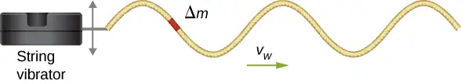
The total mechanical energy of the wave is the sum of its kinetic energy and potential energy. The kinetic energy \(K=\frac{1}{2}mv^{2}\) of each mass element of the string of length \(\Delta x\) is \(\Delta K=\frac{1}{2}(\Delta m)v_{y}^{2},\) as the mass element oscillates perpendicular to the direction of the motion of the wave. Using the constant linear mass density, the kinetic energy of each mass element of the string with length \(\Delta x\) is
A differential equation can be formed by letting the length of the mass element of the string approach zero,
Since the wave is a sinusoidal wave with an angular frequency \(\omega,\) the position of each mass element may be modeled as \(y(x,t)=A\:\sin(kx-\omega t).\) Each mass element of the string oscillates with a velocity \(v_{y}=\frac{\partial y(x,t)}{\partial t}=-A\omega\:\cos(kx-\omega t).\) The kinetic energy of each mass element of the string becomes
The wave can be very long, consisting of many wavelengths. To standardize the energy, consider the kinetic energy associated with a wavelength of the wave. This kinetic energy can be integrated over the wavelength to find the energy associated with each wavelength of the wave:
There is also potential energy associated with the wave. Much like the mass oscillating on a spring, there is a conservative restoring force that, when the mass element is displaced from the equilibrium position, drives the mass element back to the equilibrium position. The potential energy of the mass element can be found by considering the linear restoring force of the string, In Oscillations, we saw that the potential energy stored in a spring with a linear restoring force is equal to \(U=\frac{1}{2}k_{s}x^{2},\) where the equilibrium position is defined as \(x=0.00\:\text{m}.\) When a mass attached to the spring oscillates in simple harmonic motion, the angular frequency is equal to \(\omega=\sqrt{\frac{k_{s}}{m}}.\) As each mass element oscillates in simple harmonic motion, the spring constant is equal to \(k_{s}=\Delta m\omega^{2}.\) The potential energy of the mass element is equal to
Note that \(k_{s}\) is the spring constant and not the wave number \(k=\frac{2\pi}{\lambda}.\) This equation can be used to find the energy over a wavelength. Integrating over the wavelength, we can compute the potential energy over a wavelength:
The potential energy associated with a wavelength of the wave is equal to the kinetic energy associated with a wavelength.
The total energy associated with a wavelength is the sum of the potential energy and the kinetic energy:
The time-averaged power of a sinusoidal mechanical wave, which is the average rate of energy transfer associated with a wave as it passes a point, can be found by taking the total energy associated with the wave divided by the time it takes to transfer the energy. If the velocity of the sinusoidal wave is constant, the time for one wavelength to pass by a point is equal to the period of the wave, which is also constant. For a sinusoidal mechanical wave, the time-averaged power is therefore the energy associated with a wavelength divided by the period of the wave. The wavelength of the wave divided by the period is equal to the velocity of the wave,
equation callout
Note that this equation for the time-averaged power of a sinusoidal mechanical wave shows that the power is proportional to the square of the amplitude of the wave and to the square of the angular frequency of the wave. Recall that the angular frequency is equal to \(\omega=2\pi f\), so the power of a mechanical wave is equal to the square of the amplitude and the square of the frequency of the wave.
Example 16.6 Power Supplied by a String Vibrator
Consider a two-meter-long string with a mass of 70.00 g attached to a string vibrator as illustrated in Figure 16.16. The tension in the string is 90.0 N. When the string vibrator is turned on, it oscillates with a frequency of 60 Hz and produces a sinusoidal wave on the string with an amplitude of 4.00 cm and a constant wave speed. What is the time-averaged power supplied to the wave by the string vibrator?
Strategy
The power supplied to the wave should equal the time-averaged power of the wave on the string. We know the mass of the string \((m_{s})\), the length of the string \((L_{s})\), and the tension \((F_{T})\) in the string. The speed of the wave on the string can be derived from the linear mass density and the tension. The string oscillates with the same frequency as the string vibrator, from which we can find the angular frequency.
Solution
-
Begin with the equation of the time-averaged power of a sinusoidal wave on a string:
\[ P=\frac{1}{2}\mu A^{2}\omega^{2}v. \]The amplitude is given, so we need to calculate the linear mass density of the string, the angular frequency of the wave on the string, and the speed of the wave on the string.
-
We need to calculate the linear density to find the wave speed:
\[ \mu=\frac{m_{s}}{L_{s}}=\frac{0.070\:\text{kg}}{2.00\:\text{m}}=0.035\:\text{kg/m}. \] -
The wave speed can be found using the linear mass density and the tension of the string:
\[ v=\sqrt{\frac{F_{T}}{\mu}}=\sqrt{\frac{90.00\:\text{N}}{0.035\:\text{kg/m}}}=50.71\:\text{m/s}. \] -
The angular frequency can be found from the frequency:
\[ \omega=2\pi f=2\pi(60\:\text{s}^{-1})=376.80\:\text{s}^{-1}. \] -
Calculate the time-averaged power:
\[ P=\frac{1}{2}\mu A^{2}\omega^{2}v=\frac{1}{2}\left( 0.035\frac{\text{kg}}{\text{m}} \right){(0.040\:\text{m})}^{2}{(376.80\:\text{s}^{-1})}^{2}\left( 50.71\frac{\text{m}}{\text{s}} \right)=201.59\:\text{W}. \]
Significance
The time-averaged power of a sinusoidal wave is proportional to the square of the amplitude of the wave and the square of the angular frequency of the wave. This is true for most mechanical waves. If either the angular frequency or the amplitude of the wave were doubled, the power would increase by a factor of four. The time-averaged power of the wave on a string is also proportional to the speed of the sinusoidal wave on the string. If the speed were doubled, by increasing the tension by a factor of four, the power would also be doubled.
Check Your Understanding
Is the time-averaged power of a sinusoidal wave on a string proportional to the linear density of the string?
Answer
At first glance, the time-averaged power of a sinusoidal wave on a string may look proportional to the linear density of the string because \(P=\frac{1}{2}\mu A^{2}\omega^{2}v;\) however, the speed of the wave depends on the linear density. Replacing the wave speed with \(\sqrt{\frac{F_{T}}{\mu}}\) shows that the power is proportional to the square root of tension and proportional to the square root of the linear mass density:
\(P=\frac{1}{2}\mu A^{2}\omega^{2}v=\frac{1}{2}\mu A^{2}\omega^{2}\sqrt{\frac{F_{T}}{\mu}}=\frac{1}{2}A^{2}\omega^{2}\sqrt{\mu F_{T}}.\)
The equations for the energy of the wave and the time-averaged power were derived for a sinusoidal wave on a string. In general, the energy of a mechanical wave and the power are proportional to the amplitude squared and to the angular frequency squared (and therefore the frequency squared).
Another important characteristic of waves is the intensity of the waves. Waves can also be concentrated or spread out. Waves from an earthquake, for example, spread out over a larger area as they move away from a source, so they do less damage the farther they get from the source. Changing the area the waves cover has important effects. All these pertinent factors are included in the definition of intensity (I) as power per unit area:
equation callout
where P is the power carried by the wave through area A. The definition of intensity is valid for any energy in transit, including that carried by waves. The SI unit for intensity is watts per square meter (W/m2). Many waves are spherical waves that move out from a source as a sphere. For example, a sound speaker mounted on a post above the ground may produce sound waves that move away from the source as a spherical wave. Sound waves are discussed in more detail in the next chapter, but in general, the farther you are from the speaker, the less intense the sound you hear. As a spherical wave moves out from a source, the surface area of the wave increases as the radius increases \((A=4\pi r^{2}).\) The intensity for a spherical wave is therefore
equation callout
If there are no dissipative forces, the energy will remain constant as the spherical wave moves away from the source, but the intensity will decrease as the surface area increases.
In the case of the two-dimensional circular wave, the wave moves out, increasing the circumference of the wave as the radius of the circle increases. If you toss a pebble in a pond, the surface ripple moves out as a circular wave. As the ripple moves away from the source, the amplitude decreases. The energy of the wave spreads around a larger circumference and the intensity decreases proportional to \(\frac{1}{r},\) which is also the same in the case of a spherical wave, since intensity is proportional to the amplitude squared.
16.5 Interference of Waves¶
Learning Objectives
By the end of this section, you will be able to:
- Explain how mechanical waves are reflected and transmitted at the boundaries of a medium
- Define the terms interference and superposition
- Find the resultant wave of two identical sinusoidal waves that differ only by a phase shift
Up to now, we have been studying mechanical waves that propagate continuously through a medium, but we have not discussed what happens when waves encounter the boundary of the medium or what happens when a wave encounters another wave propagating through the same medium. Waves do interact with boundaries of the medium, and all or part of the wave can be reflected. For example, when you stand some distance from a rigid cliff face and yell, you can hear the sound waves reflect off the rigid surface as an echo. Waves can also interact with other waves propagating in the same medium. If you throw two rocks into a pond some distance from one another, the circular ripples that result from the two stones seem to pass through one another as they propagate out from where the stones entered the water. This phenomenon is known as interference. In this section, we examine what happens to waves encountering a boundary of a medium or another wave propagating in the same medium. We will see that their behavior is quite different from the behavior of particles and rigid bodies. Later, when we study modern physics, we will see that only at the scale of atoms do we see similarities in the properties of waves and particles.
Reflection and Transmission¶
When a wave propagates through a medium, it reflects when it encounters the boundary of the medium. The wave before hitting the boundary is known as the incident wave. The wave after encountering the boundary is known as the reflected wave. How the wave is reflected at the boundary of the medium depends on the boundary conditions; waves will react differently if the boundary of the medium is fixed in place or free to move (Figure 16.17). A fixed boundary condition exists when the medium at a boundary is fixed in place so it cannot move. A free boundary condition exists when the medium at the boundary is free to move.
![Figure a shows two figures of a string attached to a rigid support at the right. The top string is labeled before reflection. A pulse formed at the top of the string propagates towards the right with velocity v subscript i. The bottom string is labeled after reflection. A pulse formed at the bottom of the string propagates towards the left with velocity v subscript R. Figure b shows two figures of a string attached to a ring that is passed through a pole on the right. The top string is labeled before reflection. A pulse formed at the top of the string propagates towards the right with velocity v subscript i. The bottom string is labeled after reflection. A pulse formed at the top of the string propagates towards the left with velocity v subscript R.](img/cnx-uphysics-16-05-hardsoft.webp)
Part (a) of the Figure 16.17 shows a fixed boundary condition. Here, one end of the string is fixed to a wall so the end of the string is fixed in place and the medium (the string) at the boundary cannot move. When the wave is reflected, the amplitude of the reflected wave is exactly the same as the amplitude of the incident wave, but the reflected wave is reflected \(180{}^{\circ}(\pi\:\text{rad})\) out of phase with respect to the incident wave. The phase change can be explained using Newton’s third law: Recall that Newton’s third law states that when object A exerts a force on object B, then object B exerts an equal and opposite force on object A. As the incident wave encounters the wall, the string exerts an upward force on the wall and the wall reacts by exerting an equal and opposite force on the string. The reflection at a fixed boundary is inverted. Note that the figure shows a crest of the incident wave reflected as a trough. If the incident wave were a trough, the reflected wave would be a crest.
Part (b) of the figure shows a free boundary condition. Here, one end of the string is tied to a solid ring of negligible mass on a frictionless pole, so the end of the string is free to move up and down. As the incident wave encounters the boundary of the medium, it is also reflected. In the case of a free boundary condition, the reflected wave is in phase with respect to the incident wave. In this case, the wave encounters the free boundary applying an upward force on the ring, accelerating the ring up. The ring travels up to the maximum height equal to the amplitude of the wave and then accelerates down towards the equilibrium position due to the tension in the string. The figure shows the crest of an incident wave being reflected in phase with respect to the incident wave as a crest. If the incident wave were a trough, the reflected wave would also be a trough. The amplitude of the reflected wave would be equal to the amplitude of the incident wave.
In some situations, the boundary of the medium is neither fixed nor free. Consider Figure 16.18(a), where a low-linear mass density string is attached to a string of a higher linear mass density. In this case, the reflected wave is out of phase with respect to the incident wave. There is also a transmitted wave that is in phase with respect to the incident wave. Both the transmitted and the reflected waves have amplitudes less than the amplitude of the incident wave. If the tension is the same in both strings, the wave speed is higher in the string with the lower linear mass density.
![Figure a shows two strings, the top one labeled before reflection and the bottom one labeled after reflection. The top string has a pulse labeled incident wave, which propagates to the right with velocity v subscript i. The bottom string has two pulses. The one on the left is labeled transmitted wave. This propagates to the right with velocity v subscript T. The wave on the left is labeled reflected wave. It moves to the left with velocity v subscript R. It has a smaller amplitude from the incident wave and is upside down. Figure b shows two strings, the top one labeled before reflection and the bottom one labeled after reflection. The top string has a pulse labeled incident wave, which propagates to the right with velocity v subscript i. The bottom string has two pulses. The one on the left is labeled transmitted wave and the one on the right is labeled reflected wave. Both are formed at the top of the string.](img/cnx-uphysics-16-05-hardsoft2.webp)
Part (b) of the figure shows a high-linear mass density string is attached to a string of a lower linear density. In this case, the reflected wave is in phase with respect to the incident wave. There is also a transmitted wave that is in phase with respect to the incident wave. Both the incident and the reflected waves have amplitudes less than the amplitude of the incident wave. Here you may notice that if the tension is the same in both strings, the wave speed is higher in the string with the lower linear mass density.
Superposition and Interference¶
Most waves do not look very simple. Complex waves are more interesting, even beautiful, but they look formidable. Most interesting mechanical waves consist of a combination of two or more traveling waves propagating in the same medium. The principle of superposition can be used to analyze the combination of waves.
Consider two simple pulses of the same amplitude moving toward one another in the same medium, as shown in Figure 16.19. Eventually, the waves overlap, producing a wave that has twice the amplitude, and then continue on unaffected by the encounter. The pulses are said to interfere, and this phenomenon is known as interference.
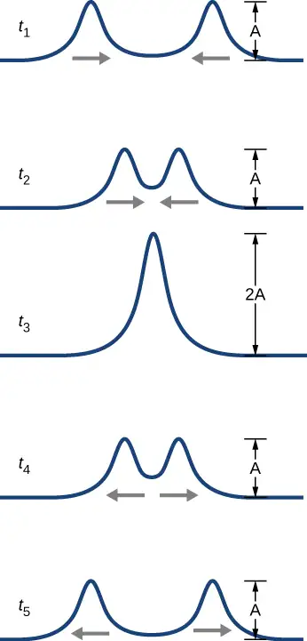
To analyze the interference of two or more waves, we use the principle of superposition. For mechanical waves, the principle of superposition states that if two or more traveling waves combine at the same point, the resulting position of the mass element of the medium, at that point, is the algebraic sum of the position due to the individual waves. This property is exhibited by many waves observed, such as waves on a string, sound waves, and surface water waves. Electromagnetic waves also obey the superposition principle, but the electric and magnetic fields of the combined wave are added instead of the displacement of the medium. Waves that obey the superposition principle are linear waves; waves that do not obey the superposition principle are said to be nonlinear waves. In this chapter, we deal with linear waves, in particular, sinusoidal waves.
The superposition principle can be understood by considering the linear wave equation. In Mathematics of a Wave, we defined a linear wave as a wave whose mathematical representation obeys the linear wave equation. For a transverse wave on a string with an elastic restoring force, the linear wave equation is
Any wave function \(y(x,t)=y(x\mp vt),\) where the argument of the function is linear \((x\mp vt)\) is a solution to the linear wave equation and is a linear wave function. If wave functions \(y_{1}(x,t)\) and \(y_{2}(x,t)\) are solutions to the linear wave equation, the sum of the two functions \(y_{1}(x,t)+y_{2}(x,t)\) is also a solution to the linear wave equation. Mechanical waves that obey superposition are normally restricted to waves with amplitudes that are small with respect to their wavelengths. If the amplitude is too large, the medium is distorted past the region where the restoring force of the medium is linear.
Waves can interfere constructively or destructively. Figure 16.20 shows two identical sinusoidal waves that arrive at the same point exactly in phase. Figure 16.20(a) and (b) show the two individual waves, Figure 16.20(c) shows the resultant wave that results from the algebraic sum of the two linear waves. The crests of the two waves are precisely aligned, as are the troughs. This superposition produces constructive interference. Because the disturbances add, constructive interference produces a wave that has twice the amplitude of the individual waves, but has the same wavelength.
Figure 16.21 shows two identical waves that arrive exactly \(180{}^{\circ}\) out of phase, producing destructive interference. Figure 16.21(a) and (b) show the individual waves, and Figure 16.21(c) shows the superposition of the two waves. Because the troughs of one wave add the crest of the other wave, the resulting amplitude is zero for destructive interference—the waves completely cancel.
![Figures a and b each show a wave with amplitude A and wavelength lambda. They are in phase with one another. Figure a is labeled y1 parentheses x, t parentheses equal to A sine parentheses kx minus omega t parentheses. Figure b is labeled y2 parentheses x, t parentheses equal to A sine parentheses kx minus omega t parentheses. Figure c shows a wave that is in phase with the other two. It has amplitude 2A and wavelength lambda. It is labeled y parentheses x, t parentheses equal to y1 plus y2 equal to 2A sine parentheses kx minus omega t parentheses.](img/cnx-uphysics-16-05-construct.webp)
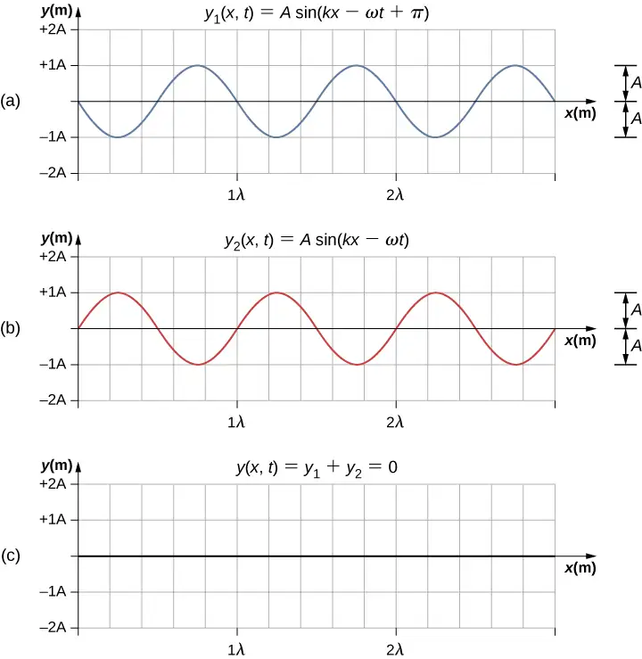
When linear waves interfere, the resultant wave is just the algebraic sum of the individual waves as stated in the principle of superposition. Figure 16.22 shows two waves (red and blue) and the resultant wave (black). The resultant wave is the algebraic sum of the two individual waves.
![Figure shows three waves. Two of these, blue and red have y values varying from -10 to plus 10 and the same wavelength. They are slightly out of phase. The third, which is black, has the same wavelength but a larger amplitude. Another figure shows a blown up portion of this graph. At x approximately equal to 0.74, the y values of the red and blue waves are y1 = 8 and y2 = 10 respectively. The y value of the black wave is y1 + y2 = 18. At x equal to 1, the y values of the red and blue waves are both 9.5. The y value of the black wave is y1 + y2 = 19.](img/cnx-uphysics-16-05-superimpos.webp)
The superposition of most waves produces a combination of constructive and destructive interference, and can vary from place to place and time to time. Sound from a stereo, for example, can be loud in one spot and quiet in another. Varying loudness means the sound waves add partially constructively and partially destructively at different locations. A stereo has at least two speakers creating sound waves, and waves can reflect from walls. All these waves interfere, and the resulting wave is the superposition of the waves.
We have shown several examples of the superposition of waves that are similar. Figure 16.23 illustrates an example of the superposition of two dissimilar waves. Here again, the disturbances add, producing a resultant wave.
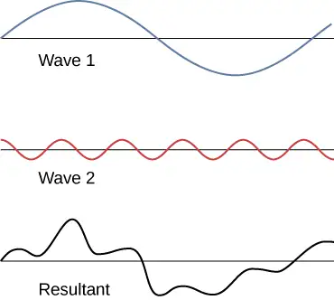
At times, when two or more mechanical waves interfere, the pattern produced by the resulting wave can be rich in complexity, some without any readily discernable patterns. For example, plotting the sound wave of your favorite music can look quite complex and is the superposition of the individual sound waves from many instruments; it is the complexity that makes the music interesting and worth listening to. At other times, waves can interfere and produce interesting phenomena, which are complex in their appearance and yet beautiful in simplicity of the physical principle of superposition, which formed the resulting wave. One example is the phenomenon known as standing waves, produced by two identical waves moving in different directions. We will look more closely at this phenomenon in the next section.
Media
Engage the Phet simulation below to make waves with a dripping faucet, audio speaker, or laser! Add a second source or a pair of slits to create an interference pattern. You can observe one source or two sources. Using two sources, you can observe the interference patterns that result from varying the frequencies and the amplitudes of the sources.
Superposition of Sinusoidal Waves that Differ by a Phase Shift¶
Many examples in physics consist of two sinusoidal waves that are identical in amplitude, wave number, and angular frequency, but differ by a phase shift:
When these two waves exist in the same medium, the resultant wave resulting from the superposition of the two individual waves is the sum of the two individual waves:
The resultant wave can be better understood by using the trigonometric identity:
where \(u=kx-\omega t+\phi\) and \(v=kx-\omega t\). The resulting wave becomes
This equation is usually written as
equation callout
The resultant wave has the same wave number and angular frequency, an amplitude of \(A_{R}=\left[ 2A\:\cos\left( \frac{\phi}{2} \right) \right],\) and a phase shift equal to half the original phase shift. Examples of waves that differ only in a phase shift are shown in Figure 16.24. The red and blue waves each have the same amplitude, wave number, and angular frequency, and differ only in a phase shift. They therefore have the same period, wavelength, and frequency. The green wave is the result of the superposition of the two waves. When the two waves have a phase difference of zero, the waves are in phase, and the resultant wave has the same wave number and angular frequency, and an amplitude equal to twice the individual amplitudes (part (a)). This is constructive interference. If the phase difference is \(180{}^{\circ},\) the waves interfere in destructive interference (part (c)). The resultant wave has an amplitude of zero. Any other phase difference results in a wave with the same wave number and angular frequency as the two incident waves but with a phase shift of \(\phi\text{/}2\) and an amplitude equal to \(2A\:\cos(\phi\text{/}2).\) Examples are shown in parts (b) and (d).
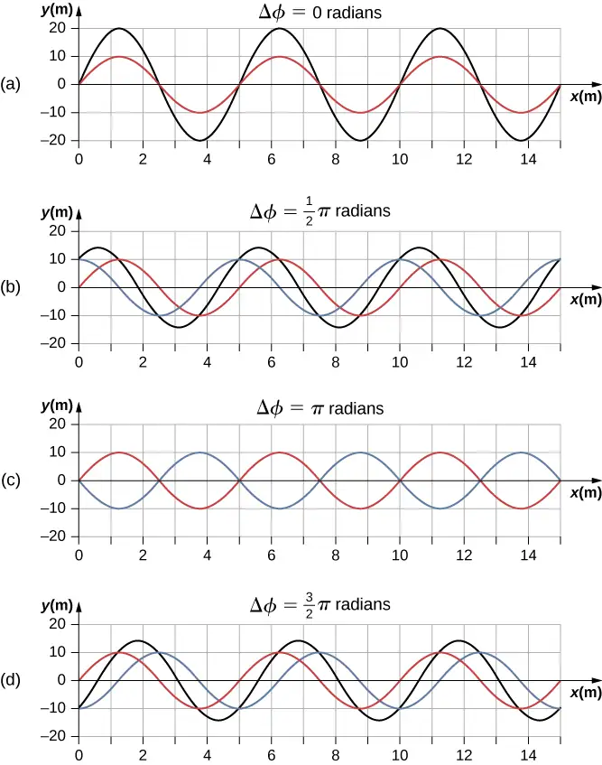
16.6 Standing Waves and Resonance¶
Learning Objectives
By the end of this section, you will be able to:
- Describe standing waves and explain how they are produced
- Describe the modes of a standing wave on a string
- Provide examples of standing waves beyond the waves on a string
Throughout this chapter, we have been studying traveling waves, or waves that transport energy from one place to another. Under certain conditions, waves can bounce back and forth through a particular region, effectively becoming stationary. These are called standing waves.
Another related effect is known as resonance. In Oscillations, we defined resonance as a phenomenon in which a small-amplitude driving force could produce large-amplitude motion. Think of a child on a swing, which can be modeled as a physical pendulum. Relatively small-amplitude pushes by a parent can produce large-amplitude swings. Sometimes this resonance is good—for example, when producing music with a stringed instrument. At other times, the effects can be devastating, such as the collapse of a building during an earthquake. In the case of standing waves, the relatively large amplitude standing waves are produced by the superposition of smaller amplitude component waves.
Standing Waves¶
Sometimes waves do not seem to move; rather, they just vibrate in place. You can see unmoving waves on the surface of a glass of milk in a refrigerator, for example. Vibrations from the refrigerator motor create waves on the milk that oscillate up and down but do not seem to move across the surface. Figure 16.25 shows an experiment you can try at home. Take a bowl of milk and place it on a common box fan. Vibrations from the fan will produce circular standing waves in the milk. The waves are visible in the photo due to the reflection from a lamp. These waves are formed by the superposition of two or more traveling waves, such as illustrated in Figure 16.26 for two identical waves moving in opposite directions. The waves move through each other with their disturbances adding as they go by. If the two waves have the same amplitude and wavelength, then they alternate between constructive and destructive interference. The resultant looks like a wave standing in place and, thus, is called a standing wave.
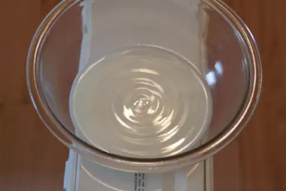
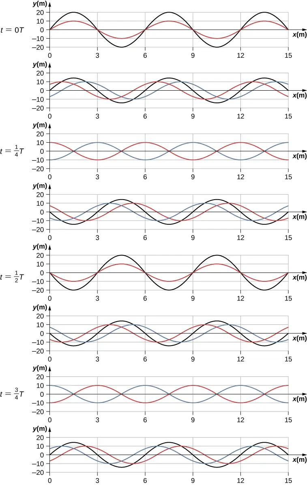
Consider two identical waves that move in opposite directions. The first wave has a wave function of \(y_{1}(x,t)=A\:\sin(kx-\omega t)\) and the second wave has a wave function \(y_{2}(x,t)=A\:\sin(kx+\omega t)\). The waves interfere and form a resultant wave
This can be simplified using the trigonometric identity
where \(\alpha=kx\) and \(\beta=\omega t\), giving us
which simplifies to
equation callout
Notice that the resultant wave is a sine wave that is a function only of position, multiplied by a cosine function that is a function only of time. Graphs of y(x,t) as a function of x for various times are shown in Figure 16.26. The red wave moves in the negative x-direction, the blue wave moves in the positive x-direction, and the black wave is the sum of the two waves. As the red and blue waves move through each other, they move in and out of constructive interference and destructive interference.
Initially, at time \(t=0,\) the two waves are in phase, and the result is a wave that is twice the amplitude of the individual waves. The waves are also in phase at the time \(t=\frac{T}{2}.\) In fact, the waves are in phase at any integer multiple of half of a period:
At other times, the two waves are \(180{}^{\circ}(\pi\:\text{radians})\) out of phase, and the resulting wave is equal to zero. This happens at
Notice that some x-positions of the resultant wave are always zero no matter what the phase relationship is. These positions are called nodes. Where do the nodes occur? Consider the solution to the sum of the two waves
Finding the positions where the sine function equals zero provides the positions of the nodes.
There are also positions where y oscillates between \(y=\pm A\). These are the antinodes. We can find them by considering which values of x result in \(\sin(kx)=\pm 1\).
What results is a standing wave as shown in Figure 16.27, which shows snapshots of the resulting wave of two identical waves moving in opposite directions. The resulting wave appears to be a sine wave with nodes at integer multiples of half wavelengths. The antinodes oscillate between \(y=\pm 2A\) due to the cosine term, \(\cos(\omega t)\), which oscillates between \(\pm 1\).
The resultant wave appears to be standing still, with no apparent movement in the x-direction, although it is composed of one wave function moving in the positive, whereas the second wave is moving in the negative x-direction. Figure 16.27 shows various snapshots of the resulting wave. The nodes are marked with red dots while the antinodes are marked with blue dots.
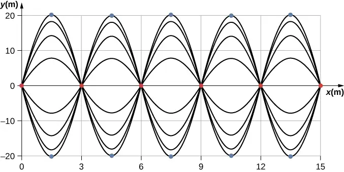
A common example of standing waves are the waves produced by stringed musical instruments. When the string is plucked, pulses travel along the string in opposite directions. The ends of the strings are fixed in place, so nodes appear at the ends of the strings—the boundary conditions of the system, regulating the resonant frequencies in the strings. The resonance produced on a string instrument can be modeled in a physics lab using the apparatus shown in Figure 16.28.
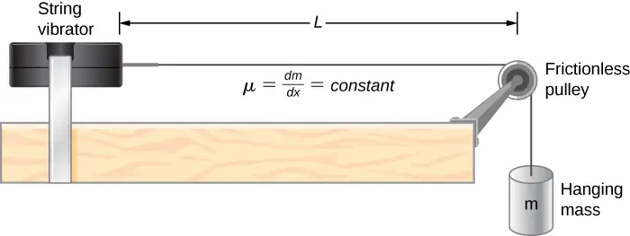
The lab setup shows a string attached to a string vibrator, which oscillates the string with an adjustable frequency f. The other end of the string passes over a frictionless pulley and is tied to a hanging mass. The magnitude of the tension in the string is equal to the weight of the hanging mass. The string has a constant linear density (mass per length) \(\mu\) and the speed at which a wave travels down the string equals \(v=\sqrt{\frac{F_{T}}{\mu}}=\sqrt{\frac{mg}{\mu}}\) Equation 16.7. The symmetrical boundary conditions (a node at each end) dictate the possible frequencies that can excite standing waves. Starting from a frequency of zero and slowly increasing the frequency, the first mode \(n=1\) appears as shown in Figure 16.29. The first mode, also called the fundamental mode or the first harmonic, shows half of a wavelength has formed, so the wavelength is equal to twice the length between the nodes \(\lambda_{1}=2L\). The fundamental frequency, or first harmonic frequency, that drives this mode is
where the speed of the wave is \(v=\sqrt{\frac{F_{T}}{\mu}}.\) Keeping the tension constant and increasing the frequency leads to the second harmonic or the \(n=2\) mode. This mode is a full wavelength \(\lambda_{2}=L\) and the frequency is twice the fundamental frequency:
![Four figures of a string of length L are shown. Each has two waves. The first one has 1 node. It is labeled half lambda 1 = L, lambda 1 = 2 by 1 times L. The second figure has 2 nodes. It is labeled lambda 2 = L, lambda 2 = 2 by 2 times L. The third figure has three nodes. It is labeled 3 by 2 times lambda 3 = L, lambda 3 = 2 by 3 times L. The fourth figure has 4 nodes. It is labeled 4 by 2 times lambda 4 = L, lambda 4 = 2 by 4 times L. There is a derived formula at the bottom, lambda n equal to 2 by n times L for n = 1, 2, 3 and so on.](img/cnx-uphysics-16-06-labmodes.webp)
The next two modes, or the third and fourth harmonics, have wavelengths of \(\lambda_{3}=\frac{2}{3}L\) and \(\lambda_{4}=\frac{2}{4}L,\) driven by frequencies of \(f_{3}=\frac{3v}{2L}=3f_{1}\) and \(f_{4}=\frac{4v}{2L}=4f_{1}.\) All frequencies above the frequency \(f_{1}\) are known as the overtones. The equations for the wavelength and the frequency can be summarized as:
equation callout
equation callout
The standing wave patterns that are possible for a string, the first four of which are shown in Figure 16.29, are known as the normal modes, with frequencies known as the normal frequencies. In summary, the first frequency to produce a normal mode is called the fundamental frequency (or first harmonic). Any frequencies above the fundamental frequency are overtones. The second frequency of the \(n=2\) normal mode of the string is the first overtone (or second harmonic). The frequency of the \(n=3\) normal mode is the second overtone (or third harmonic) and so on.
The solutions shown as Equation 16.15 and Equation 16.16 are for a string with the boundary condition of a node on each end. When the boundary condition on either side is the same, the system is said to have symmetric boundary conditions. Equation 16.15 and Equation 16.16 are good for any symmetric boundary conditions, that is, nodes at both ends or antinodes at both ends.
Example 16.7 Standing Waves on a String
Consider a string of \(L=2.00\:\text{m}\) attached to an adjustable-frequency string vibrator as shown in Figure 16.30. The waves produced by the vibrator travel down the string and are reflected by the fixed boundary condition at the pulley. The string, which has a linear mass density of \(\mu=0.006\:\text{kg/m,}\) is passed over a frictionless pulley of a negligible mass, and the tension is provided by a 2.00-kg hanging mass. (a) What is the velocity of the waves on the string? (b) Draw a sketch of the first three normal modes of the standing waves that can be produced on the string and label each with the wavelength. (c) List the frequencies that the string vibrator must be tuned to in order to produce the first three normal modes of the standing waves.
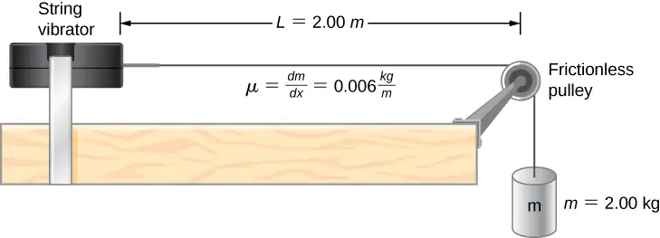
Strategy
a) The velocity of the wave can be found using \(v=\sqrt{\frac{F_{T}}{\mu}}.\) The tension is provided by the weight of the hanging mass.
b) The standing waves will depend on the boundary conditions. There must be a node at each end. The first mode will be one half of a wave. The second can be found by adding a half wavelength. That is the shortest length that will result in a node at the boundaries. For example, adding one quarter of a wavelength will result in an antinode at the boundary and is not a mode which would satisfy the boundary conditions. This is shown in Figure 16.31.
c) Since the wave speed velocity is the wavelength times the frequency, the frequency is wave speed divided by the wavelength.
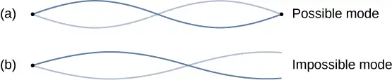
Solution
a. Begin with the velocity of a wave on a string. The tension is equal to the weight of the hanging mass. The linear mass density and mass of the hanging mass are given:
b. The first normal mode that has a node on each end is a half wavelength. The next two modes are found by adding a half of a wavelength.
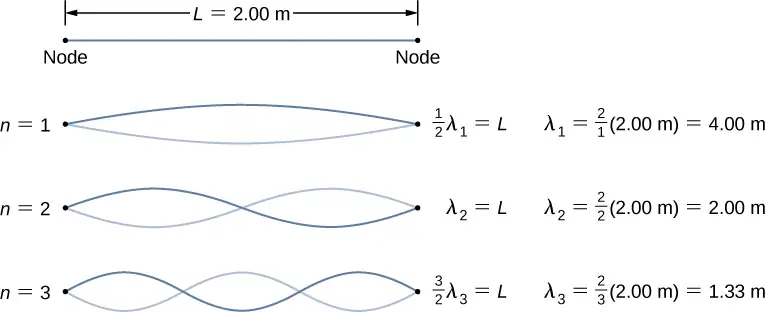
c. The frequencies of the first three modes are found by using \(f=\frac{v_{w}}{\lambda}.\)
Significance
The three standing modes in this example were produced by maintaining the tension in the string and adjusting the driving frequency. Keeping the tension in the string constant results in a constant velocity. The same modes could have been produced by keeping the frequency constant and adjusting the speed of the wave in the string (by changing the hanging mass.)
Media
Engage the Phet simulation below to play with a 1D or 2D system of coupled mass-spring oscillators. Vary the number of masses, set the initial conditions, and watch the system evolve. See the spectrum of normal modes for arbitrary motion. See longitudinal or transverse modes in the 1D system.
Check Your Understanding
The equations for the wavelengths and the frequencies of the modes of a wave produced on a string:
were derived by considering a wave on a string where there were symmetric boundary conditions of a node at each end. These modes resulted from two sinusoidal waves with identical characteristics except they were moving in opposite directions, confined to a region L with nodes required at both ends. Will the same equations work if there were symmetric boundary conditions with antinodes at each end? What would the normal modes look like for a medium that was free to oscillate on each end? Don’t worry for now if you cannot imagine such a medium, just consider two sinusoidal wave functions in a region of length L, with antinodes on each end.
Answer
Yes, the equations would work equally well for symmetric boundary conditions of a medium free to oscillate on each end where there was an antinode on each end. The normal modes of the first three modes are shown below. The dotted line shows the equilibrium position of the medium.
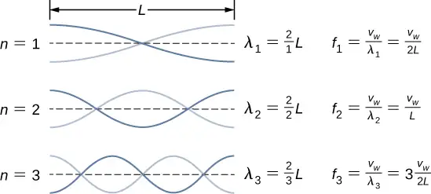
Note that the first mode is two quarters, or one half, of a wavelength. The second mode is one quarter of a wavelength, followed by one half of a wavelength, followed by one quarter of a wavelength, or one full wavelength. The third mode is one and a half wavelengths. These are the same result as the string with a node on each end. The equations for symmetrical boundary conditions work equally well for fixed boundary conditions and free boundary conditions. These results will be revisited in the next chapter when discussing sound wave in an open tube.
The free boundary conditions shown in the last Check Your Understanding may seem hard to visualize. How can there be a system that is free to oscillate on each end? In Figure 16.32 are shown two possible configuration of a metallic rods (shown in red) attached to two supports (shown in blue). In part (a), the rod is supported at the ends, and there are fixed boundary conditions at both ends. Given the proper frequency, the rod can be driven into resonance with a wavelength equal to length of the rod, with nodes at each end. In part (b), the rod is supported at positions one quarter of the length from each end of the rod, and there are free boundary conditions at both ends. Given the proper frequency, this rod can also be driven into resonance with a wavelength equal to the length of the rod, but there are antinodes at each end. If you are having trouble visualizing the wavelength in this figure, remember that the wavelength may be measured between any two nearest identical points and consider Figure 16.33.
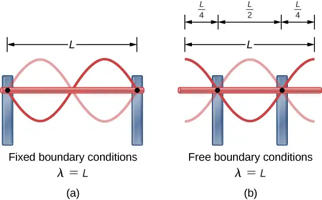
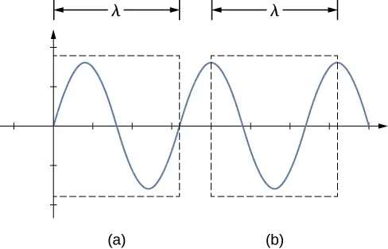
Note that the study of standing waves can become quite complex. In Figure 16.32(a), the \(n=2\) mode of the standing wave is shown, and it results in a wavelength equal to L. In this configuration, the \(n=1\) mode would also have been possible with a standing wave equal to 2L. Is it possible to get the \(n=1\) mode for the configuration shown in part (b)? The answer is no. In this configuration, there are additional conditions set beyond the boundary conditions. Since the rod is mounted at a point one quarter of the length from each side, a node must exist there, and this limits the possible modes of standing waves that can be created. We leave it as an exercise for the reader to consider if other modes of standing waves are possible. It should be noted that when a system is driven at a frequency that does not cause the system to resonate, vibrations may still occur, but the amplitude of the vibrations will be much smaller than the amplitude at resonance.
A field of mechanical engineering uses the sound produced by the vibrating parts of complex mechanical systems to troubleshoot problems with the systems. Suppose a part in an automobile is resonating at the frequency of the car’s engine, causing unwanted vibrations in the automobile. This may cause the engine to fail prematurely. The engineers use microphones to record the sound produced by the engine, then use a technique called Fourier analysis to find frequencies of sound produced with large amplitudes and then look at the parts list of the automobile to find a part that would resonate at that frequency. The solution may be as simple as changing the composition of the material used or changing the length of the part in question.
There are other numerous examples of resonance in standing waves in the physical world. The air in a tube, such as found in a musical instrument like a flute, can be forced into resonance and produce a pleasant sound, as we discuss in Sound.
At other times, resonance can cause serious problems. A closer look at earthquakes provides evidence for conditions appropriate for resonance, standing waves, and constructive and destructive interference. A building may vibrate for several seconds with a driving frequency matching that of the natural frequency of vibration of the building—producing a resonance resulting in one building collapsing while neighboring buildings do not. Often, buildings of a certain height are devastated while other taller buildings remain intact. The building height matches the condition for setting up a standing wave for that particular height. The span of the roof is also important. Often it is seen that gymnasiums, supermarkets, and churches suffer damage when individual homes suffer far less damage. The roofs with large surface areas supported only at the edges resonate at the frequencies of the earthquakes, causing them to collapse. As the earthquake waves travel along the surface of Earth and reflect off denser rocks, constructive interference occurs at certain points. Often areas closer to the epicenter are not damaged, while areas farther away are damaged.
Chapter Review¶
Key Terms¶
- antinode
- location of maximum amplitude in standing waves
- constructive interference
- when two waves arrive at the same point exactly in phase; that is, the crests of the two waves are precisely aligned, as are the troughs
- destructive interference
- when two identical waves arrive at the same point exactly out of phase; that is, precisely aligned crest to trough
- fixed boundary condition
- when the medium at a boundary is fixed in place so it cannot move
- free boundary condition
- exists when the medium at the boundary is free to move
- fundamental frequency
- lowest frequency that will produce a standing wave
- intensity (I)
- power per unit area
- interference
- overlap of two or more waves at the same point and time
- linear wave equation
- equation describing waves that result from a linear restoring force of the medium; any function that is a solution to the wave equation describes a wave moving in the positive x-direction or the negative x-direction with a constant wave speed v
- longitudinal wave
- wave in which the disturbance is parallel to the direction of propagation
- mechanical wave
- wave that is governed by Newton’s laws and requires a medium
- node
- point where the string does not move; more generally, nodes are where the wave disturbance is zero in a standing wave
- normal mode
- possible standing wave pattern for a standing wave on a string
- overtone
- frequency that produces standing waves and is higher than the fundamental frequency
- pulse
- single disturbance that moves through a medium, transferring energy but not mass
- standing wave
- wave that can bounce back and forth through a particular region, effectively becoming stationary
- superposition
- phenomenon that occurs when two or more waves arrive at the same point
- transverse wave
- wave in which the disturbance is perpendicular to the direction of propagation
- wave
- disturbance that moves from its source and carries energy
- wave function
- mathematical model of the position of particles of the medium
- wave number
- \(\frac{2\pi}{\lambda}\)
- wave speed
- magnitude of the wave velocity
- wave velocity
- velocity at which the disturbance moves; also called the propagation velocity
- wavelength
- distance between adjacent identical parts of a wave
Key Equations¶
| Wave speed | \(v=\frac{\lambda}{T}=\lambda f\) |
| Linear mass density | \(\mu=\frac{\text{mass of the string}}{\text{length of the string}}\) |
| Speed of a wave or pulse on a string under tension |
\(|v|=\sqrt{\frac{F_{T}}{\mu}}\) |
| Speed of a compression wave in a fluid | \(v=\sqrt{\frac{B}{\rho}}\) |
| Resultant wave from superposition of two sinusoidal waves that are identical except for a phase shift |
\(y_{R}(x,t)=\left[ 2A\:\cos\left( \frac{\phi}{2} \right) \right]\sin\left( kx-\omega t+\frac{\phi}{2} \right)\) |
| Wave number | \(k\equiv\frac{2\pi}{\lambda}\) |
| Wave speed | \(v=\frac{\omega}{k}\) |
| A periodic wave | \(y(x,t)=A\:\sin(kx\mp\omega t+\phi)\) |
| Phase of a wave | \(kx\mp\omega t+\phi\) |
| The linear wave equation | \(\frac{\partial^{2}y(x,t)}{\partial x^{2}}=\frac{1}{v_{w}^{2}}\:\frac{\partial^{2}y(x,t)}{\partial t^{2}}\) |
| Power averaged over a wavelength | \(P_{\text{ave}}=\frac{E_{\lambda}}{T}=\frac{1}{2}\mu A^{2}\omega^{2}\frac{\lambda}{T}=\frac{1}{2}\mu A^{2}\omega^{2}v\) |
| Intensity | \(I=\frac{P}{A}\) |
| Intensity for a spherical wave | \(I=\frac{P}{4\pi r^{2}}\) |
| Equation of a standing wave | \(y(x,t)=[2A\:\sin(kx)]\cos(\omega t)\) |
| Wavelength for symmetric boundary conditions |
\(\lambda_{n}=\frac{2}{n}L,\quad n=1,2,3,4,5...\) |
| Frequency for symmetric boundary conditions | \(f_{n}=n\frac{v}{2L}=nf_{1},\quad n=1,2,3,4,5...\) |
Summary¶
16.1 Traveling Waves¶
- A wave is a disturbance that moves from the point of origin with a wave velocity v.
- A wave has a wavelength \(\lambda\), which is the distance between adjacent identical parts of the wave. Wave velocity and wavelength are related to the wave’s frequency and period by \(v=\frac{\lambda}{T}=\lambda f.\)
- Mechanical waves are disturbances that move through a medium and are governed by Newton’s laws.
- Electromagnetic waves are disturbances in the electric and magnetic fields, and do not require a medium.
- Matter waves are a central part of quantum mechanics and are associated with protons, electrons, neutrons, and other fundamental particles found in nature.
- A transverse wave has a disturbance perpendicular to the wave’s direction of propagation, whereas a longitudinal wave has a disturbance parallel to its direction of propagation.
16.2 Mathematics of Waves¶
- A wave is an oscillation (of a physical quantity) that travels through a medium, accompanied by a transfer of energy. Energy transfers from one point to another in the direction of the wave motion. The particles of the medium oscillate up and down, back and forth, or both up and down and back and forth, around an equilibrium position.
- A snapshot of a sinusoidal wave at time \(t=0.00\:\text{s}\) can be modeled as a function of position. Two examples of such functions are \(y(x)=A\:\sin(kx+\phi)\) and \(y(x)=A\:\cos(kx+\phi).\)
- Given a function of a wave that is a snapshot of the wave, and is only a function of the position x, the motion of the pulse or wave moving at a constant velocity can be modeled with the function, replacing x with \(x\mp vt\). The minus sign is for motion in the positive direction and the plus sign for the negative direction.
- The wave function is given by \(y(x,t)=A\:\sin(kx-\omega t+\phi)\) where \(k=2\pi\text{/}\lambda\) is defined as the wave number, \(\omega=2\pi\text{/}T\) is the angular frequency, and \(\phi\) is the phase shift.
- The wave moves with a constant velocity \(v_{w}\), where the particles of the medium oscillate about an equilibrium position. The constant velocity of a wave can be found by \(v=\frac{\lambda}{T}=\frac{\omega}{k}.\)
16.3 Wave Speed on a Stretched String¶
- The speed of a wave on a string depends on the linear density of the string and the tension in the string. The linear density is mass per unit length of the string.
- In general, the speed of a wave depends on the square root of the ratio of the elastic property to the inertial property of the medium.
- The speed of a wave through a fluid is equal to the square root of the ratio of the bulk modulus of the fluid to the density of the fluid.
- The speed of sound through air at \(T=20{}^{\circ}\text{C}\) is approximately \(v_{\text{s}}=343.00\:\text{m/s}.\)
16.4 Energy and Power of a Wave¶
- The energy and power of a wave are proportional to the square of the amplitude of the wave and the square of the angular frequency of the wave.
- The time-averaged power of a sinusoidal wave on a string is found by \(P_{\text{ave}}=\frac{1}{2}\mu A^{2}\omega^{2}v,\) where \(\mu\) is the linear mass density of the string, A is the amplitude of the wave, \(\omega\) is the angular frequency of the wave, and v is the speed of the wave.
- Intensity is defined as the power divided by the area. In a spherical wave, the area is \(A=4\pi r^{2}\) and the intensity is \(I=\frac{P}{4\pi r^{2}}.\) As the wave moves out from a source, the energy is conserved, but the intensity decreases as the area increases.
16.5 Interference of Waves¶
- Superposition is the combination of two waves at the same location.
- Constructive interference occurs from the superposition of two identical waves that are in phase.
- Destructive interference occurs from the superposition of two identical waves that are \(180{}^{\circ}(\pi\:\text{radians})\) out of phase.
- The wave that results from the superposition of two sine waves that differ only by a phase shift is a wave with an amplitude that depends on the value of the phase difference.
16.6 Standing Waves and Resonance¶
- A standing wave is the superposition of two waves which produces a wave that varies in amplitude but does not propagate.
- Nodes are points of no motion in standing waves.
- An antinode is the location of maximum amplitude of a standing wave.
- Normal modes of a wave on a string are the possible standing wave patterns. The lowest frequency that will produce a standing wave is known as the fundamental frequency. The higher frequencies which produce standing waves are called overtones.
Conceptual Questions¶
16.1 Traveling Waves¶
1. Give one example of a transverse wave and one example of a longitudinal wave, being careful to note the relative directions of the disturbance and wave propagation in each.
Answer
A wave on a guitar string is an example of a transverse wave. The disturbance of the string moves perpendicular to the propagation of the wave. The sound produced by the string is a longitudinal wave where the disturbance of the air moves parallel to the propagation of the wave.
2. A sinusoidal transverse wave has a wavelength of 2.80 m. It takes 0.10 s for a portion of the string at a position x to move from a maximum position of \(y=0.03\:\text{m}\) to the equilibrium position \(y=0.\) What are the period, frequency, and wave speed of the wave?
3. What is the difference between propagation speed and the frequency of a mechanical wave? Does one or both affect wavelength? If so, how?
Answer
Propagation speed is the speed of the wave propagating through the medium. If the wave speed is constant, the speed can be found by \(v=\frac{\lambda}{T}=\lambda f.\) The frequency is the number of wave that pass a point per unit time. The wavelength is directly proportional to the wave speed and inversely proportional to the frequency.
4. Consider a stretched spring, such as a slinky. The stretched spring can support longitudinal waves and transverse waves. How can you produce transverse waves on the spring? How can you produce longitudinal waves on the spring?
5. Consider a wave produced on a stretched spring by holding one end and shaking it up and down. Does the wavelength depend on the distance you move your hand up and down?
Answer
No, the distance you move your hand up and down will determine the amplitude of the wave. The wavelength will depend on the frequency you move your hand up and down, and the speed of the wave through the spring.
6. A sinusoidal, transverse wave is produced on a stretched spring, having a period T. Each section of the spring moves perpendicular to the direction of propagation of the wave, in simple harmonic motion with an amplitude A. Does each section oscillate with the same period as the wave or a different period? If the amplitude of the transverse wave were doubled but the period stays the same, would your answer be the same?
7. An electromagnetic wave, such as light, does not require a medium. Can you think of an example that would support this claim?
Answer
Light from the Sun and stars reach Earth through empty space where there is no medium present.
16.2 Mathematics of Waves¶
8. If you were to shake the end of a taut spring up and down 10 times a second, what would be the frequency and the period of the sinusoidal wave produced on the spring?
9. If you shake the end of a stretched spring up and down with a frequency f, you can produce a sinusoidal, transverse wave propagating down the spring. Does the wave number depend on the frequency you are shaking the spring?
Answer
The wavelength is equal to the velocity of the wave times the frequency and the wave number is equal to \(k=\frac{2\pi}{\lambda},\) so yes, the wave number will depend on the frequency and also depend on the velocity of the wave propagating through the spring.
10. Does the vertical speed of a segment of a horizontal taut string through which a sinusoidal, transverse wave is propagating depend on the wave speed of the transverse wave?
11. In this section, we have considered waves that move at a constant wave speed. Does the medium accelerate?
Answer
The medium moves in simple harmonic motion as the wave propagates through the medium, continuously changing speed, therefore it accelerates. The acceleration of the medium is due to the restoring force of the medium, which acts in the opposite direction of the displacement.
12. If you drop a pebble in a pond you may notice that several concentric ripples are produced, not just a single ripple. Why do you think that is?
16.3 Wave Speed on a Stretched String¶
13. If the tension in a string were increased by a factor of four, by what factor would the wave speed of a wave on the string increase?
Answer
The wave speed is proportional to the square root of the tension, so the speed is doubled.
14. Does a sound wave move faster in seawater or fresh water, if both the sea water and fresh water are at the same temperature and the sound wave moves near the surface? \((\rho_{\text{w}}\approx 1000\frac{\text{kg}}{\text{m}^{3}},\rho_{\text{s}}\approx 1030\frac{\text{kg}}{\text{m}^{3}},B_{\text{w}}=2.15\:\times\:{10}^{9}\)
\(\text{Pa},\:B_{\text{s}}=2.34\:\times\:{10}^{9}\:\text{Pa})\)
15. Guitars have strings of different linear mass density. If the lowest density string and the highest density string are under the same tension, which string would support waves with the higher wave speed?
Answer
Since the speed of a wave on a string is inversely proportional to the square root of the linear mass density, the speed would be higher in the low linear mass density of the string.
16. Shown below are three waves that were sent down a string at different times. The tension in the string remains constant. (a) Rank the waves from the smallest wavelength to the largest wavelength. (b) Rank the waves from the lowest frequency to the highest frequency.
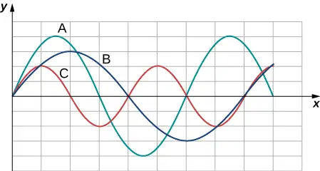
17. Electrical power lines connected by two utility poles are sometimes heard to hum when driven into oscillation by the wind. The speed of the waves on the power lines depend on the tension. What provides the tension in the power lines?
Answer
The tension in the wire is due to the weight of the electrical power cable.
18. Two strings, one with a low mass density and one with a high linear density are spliced together. The higher density end is tied to a lab post and a student holds the free end of the low-mass density string. The student gives the string a flip and sends a pulse down the strings. If the tension is the same in both strings, does the pulse travel at the same wave velocity in both strings? If not, where does it travel faster, in the low density string or the high density string?
16.4 Energy and Power of a Wave¶
19. Consider a string with under tension with a constant linear mass density. A sinusoidal wave is produced by some external driving force. If the frequency, keeping the wave amplitude as it was originally, how is the time-averaged power of the wave affected? If the amplitude of the wave is decreased by half, keeping the wave frequency as it was originally, how is the time-averaged power affected? Explain your answer.
Answer
The time averaged power is \(P=\frac{E_{\lambda}}{T}=\frac{1}{2}\mu A^{2}\omega^{2}\frac{\lambda}{T}=\frac{1}{2}\mu A^{2}\omega^{2}v.\) If the frequency or amplitude is halved, the power decreases by a factor of 4.
20. Circular water waves decrease in amplitude as they move away from where a rock is dropped. Explain why.
21. In a transverse wave on a string, the motion of the string is perpendicular to the motion of the wave. If this is so, how is possible to move energy along the length of the string?
Answer
As a portion on the string moves vertically, it exerts a force on the neighboring portion of the string, doing work on the portion and transferring the energy.
22. The energy from the sun warms the portion of the earth facing the sun during the daylight hours. Why are the North and South Poles cold while the equator is quite warm?
23. The intensity of a spherical waves decreases as the wave moves away from the source. If the intensity of the wave at the source is \(I_{0},\) how far from the source will the intensity decrease by a factor of nine?
Answer
The intensity of a spherical wave is \(I=\frac{P}{4\pi r^{2}},\) if no energy is dissipated the intensity will decrease by a factor of nine at three meters.
16.5 Interference of Waves¶
24. An incident sinusoidal wave is sent along a string that is fixed to the wall with a wave speed of v. The wave reflects off the end of the string. Describe the reflected wave.
25. A string of a length of 2.00 m with a linear mass density of \(\mu=0.006\:\text{kg/m}\) is attached to the end of a 2.00-m-long string with a linear mass density of \(\mu=0.012\:\text{kg/m}.\) The free end of the higher-density string is fixed to the wall, and a student holds the free end of the low-density string, keeping the tension constant in both strings. The student sends a pulse down the string. Describe what happens at the interface between the two strings.
Answer
At the interface, the incident pulse produces a reflected pulse and a transmitted pulse. The reflected pulse would be out of phase with respect to the incident pulse, and would move at the same propagation speed as the incident pulse, but would move in the opposite direction. The transmitted pulse would travel in the same direction as the incident pulse, but at half the speed. The transmitted pulse would be in phase with the incident pulse. Both the reflected pulse and the transmitted pulse would have amplitudes less than the amplitude of the incident pulse.
26. A long, tight spring is held by two students, one student holding each end. Each student gives the end a flip sending one wavelength of a sinusoidal wave down the spring in opposite directions. When the waves meet in the middle, what does the wave look like?
27. Many of the topics discussed in this chapter are useful beyond the topics of mechanical waves. It is hard to conceive of a mechanical wave with sharp corners, but you could encounter such a wave form in your digital electronics class, as shown below. This could be a signal from a device known as an analog to digital converter, in which a continuous voltage signal is converted into a discrete signal or a digital recording of sound. What is the result of the superposition of the two signals?
![Figure a shows the graph of a red wave with sharp corners. The y value is 0 at x=0. At x=3, the y value rises to 2 and stays constant till x=5. Here, it rises to 3 and stays constant till x=8. Here, it dips down to -2 and stays constant till x=9. Here it rises to 0 and stays constant. Figure b shows the graph of a blue wave with sharp corners. The y value is 0 at x=0. At x=3, the y value rises to 2 and stays constant till x=7. Here it dips to -1 and stays constant till x=9. Here it rises to 0 and stays constant.](img/cnx-uphysics-16-05-conc4-img.webp)
Answer
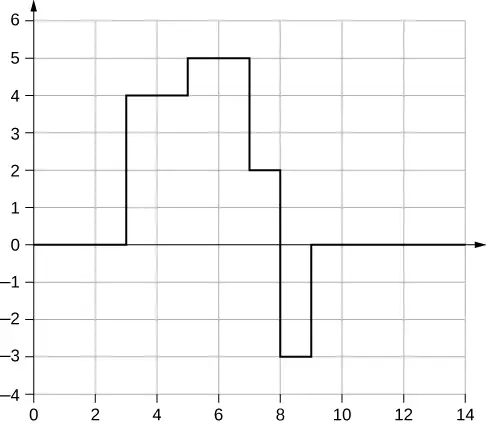
28. A string of a constant linear mass density is held taut by two students, each holding one end. The tension in the string is constant. The students each send waves down the string by wiggling the string. (a) Is it possible for the waves to have different wave speeds? (b) Is it possible for the waves to have different frequencies? (c) Is it possible for the waves to have different wavelengths?
16.6 Standing Waves and Resonance¶
29. A truck manufacturer finds that a strut in the engine is failing prematurely. A sound engineer determines that the strut resonates at the frequency of the engine and suspects that this could be the problem. What are two possible characteristics of the strut can be modified to correct the problem?
Answer
It may be as easy as changing the length and/or the density a small amount so that the parts do not resonate at the frequency of the motor.
30. Why do roofs of gymnasiums and churches seem to fail more than family homes when an earthquake occurs?
31. Wine glasses can be set into resonance by moistening your finger and rubbing it around the rim of the glass. Why?
Answer
Energy is supplied to the glass by the work done by the force of your finger on the glass. When supplied at the right frequency, standing waves form. The glass resonates and the vibrations produce sound.
32. Air conditioning units are sometimes placed on the roof of homes in the city. Occasionally, the air conditioners cause an undesirable hum throughout the upper floors of the homes. Why does this happen? What can be done to reduce the hum?
33. Consider a standing wave modeled as \(y(x,t)=4.00\:\text{cm}\:\sin(3\:\text{m}^{-1}x)\cos(4\:\text{s}^{-1}t).\) Is there a node or an antinode at \(x=0.00\:\text{m}?\) What about a standing wave modeled as \(y(x,t)=4.00\:\text{cm}\:\sin\left( 3\:\text{m}^{-1}x+\frac{\pi}{2} \right)\cos(4\:\text{s}^{-1}t)?\) Is there a node or an antinode at the \(x=0.00\:\text{m}\) position?
Answer
For the equation \(y(x,t)=4.00\:\text{cm}\:\sin(3\:\text{m}^{-1}x)\cos(4\:\text{s}^{-1}t),\) there is a node because when \(x=0.00\:\text{m}\), \(\sin(3\:\text{m}^{-1}(0.00\:\text{m}))=0.00,\) so \(y(0.00\:\text{m},t)=0.00\:\text{m}\) for all time. For the equation \(y(x,t)=4.00\:\text{cm}\:\sin\left( 3\:\text{m}^{-1}x+\frac{\pi}{2} \right)\cos(4\:\text{s}^{-1}t),\) there is an antinode because when \(x=0.00\:\text{m}\), \(\sin\left( 3\:\text{m}^{-1}(0.00\:\text{m})+\frac{\pi}{2} \right)=+1.00\), so \(y(0.00\:\text{m},t)\) oscillates between +A and −A as the cosine term oscillates between +1 and -1.
Problems¶
16.1 Traveling Waves¶
34. Storms in the South Pacific can create waves that travel all the way to the California coast, 12,000 km away. How long does it take them to travel this distance if they travel at 15.0 m/s?
35. Waves on a swimming pool propagate at 0.75 m/s. You splash the water at one end of the pool and observe the wave go to the opposite end, reflect, and return in 30.00 s. How far away is the other end of the pool?
Answer
\(2d=vt\Rightarrow d=11.25\:\text{m}\)
36. Wind gusts create ripples on the ocean that have a wavelength of 5.00 cm and propagate at 2.00 m/s. What is their frequency?
37. How many times a minute does a boat bob up and down on ocean waves that have a wavelength of 40.0 m and a propagation speed of 5.00 m/s?
Answer
\(\begin{array}{ccc} v & = & f\lambda,\:\text{so that}\:f=0.125\:\text{Hz, so that} \\ N & = & 7.50\:\text{times} \end{array}\)
38. Scouts at a camp shake the rope bridge they have just crossed and observe the wave crests to be 8.00 m apart. If they shake the bridge twice per second, what is the propagation speed of the waves?
39. What is the wavelength of the waves you create in a swimming pool if you splash your hand at a rate of 2.00 Hz and the waves propagate at a wave speed of 0.800 m/s?
Answer
\(v=f\lambda\Rightarrow\lambda=0.400\:\text{m}\)
40. What is the wavelength of an earthquake that shakes you with a frequency of 10.0 Hz and gets to another city 84.0 km away in 12.0 s?
41. Radio waves transmitted through empty space at the speed of light \((v=c=3.00\:\times\:{10}^{8}\:\text{m/s})\) by the Voyager spacecraft have a wavelength of 0.120 m. What is their frequency?
Answer
\(v=f\lambda\Rightarrow f=2.50\:\times\:{10}^{9}\:\text{Hz}\)
42. Your ear is capable of differentiating sounds that arrive at each ear just 0.34 ms apart, which is useful in determining where low frequency sound is originating from. (a) Suppose a low-frequency sound source is placed to the right of a person, whose ears are approximately 18 cm apart, and the speed of sound generated is 340 m/s. How long is the interval between when the sound arrives at the right ear and the sound arrives at the left ear? (b) Assume the same person was scuba diving and a low-frequency sound source was to the right of the scuba diver. How long is the interval between when the sound arrives at the right ear and the sound arrives at the left ear, if the speed of sound in water is 1500 m/s? (c) What is significant about the time interval of the two situations?
43. (a) Seismographs measure the arrival times of earthquakes with a precision of 0.100 s. To get the distance to the epicenter of the quake, geologists compare the arrival times of S- and P-waves, which travel at different speeds. If S- and P-waves arrive at 4.00 and 7.20 km/s, respectively, in the region considered, how precisely can the distance to the source of the earthquake be determined? (b) Seismic waves from underground detonations of nuclear bombs can be used to locate the test site and detect violations of test bans. Discuss whether your answer to (a) implies a serious limit to such detection. (Note also that the uncertainty is greater if there is an uncertainty in the propagation speeds of the S- and P-waves.)
Answer
a. The P-waves outrun the S-waves by a speed of \(v=3.20\:\text{km/s;}\) therefore, \(\Delta d=0.320\:\text{km}.\) b. Since the uncertainty in the distance is less than a kilometer, our answer to part (a) does not seem to limit the detection of nuclear bomb detonations. However, if the velocities are uncertain, then the uncertainty in the distance would increase and could then make it difficult to identify the source of the seismic waves.
44. A Girl Scout is taking a 10.00-km hike to earn a merit badge. While on the hike, she sees a cliff some distance away. She wishes to estimate the time required to walk to the cliff. She knows that the speed of sound is approximately 343 meters per second. She yells and finds that the echo returns after approximately 2.00 seconds. If she can hike 1.00 km in 10 minutes, how long would it take her to reach the cliff?
45. A quality assurance engineer at a frying pan company is asked to qualify a new line of nonstick-coated frying pans. The coating needs to be 1.00 mm thick. One method to test the thickness is for the engineer to pick a percentage of the pans manufactured, strip off the coating, and measure the thickness using a micrometer. This method is a destructive testing method. Instead, the engineer decides that every frying pan will be tested using a nondestructive method. An ultrasonic transducer is used that produces sound waves with a frequency of \(f=25\:\text{kHz}.\) The sound waves are sent through the coating and are reflected by the interface between the coating and the metal pan, and the time is recorded. The wavelength of the ultrasonic waves in the coating is 0.076 m. What should be the time recorded if the coating is the correct thickness (1.00 mm)?
Answer
\(\begin{array}{ccc} v & = & 1900\:\text{m/s} \\ \Delta t & = & 1.05\:\mu\:\text{s} \end{array}\)
16.2 Mathematics of Waves¶
46. A pulse can be described as a single wave disturbance that moves through a medium. Consider a pulse that is defined at time \(t=0.00\:\text{s}\) by the equation \(y(x)=\frac{6.00\:\text{m}^{3}}{x^{2}+2.00\:\text{m}^{2}}\) centered around \(x=0.00\:\text{m}.\) The pulse moves with a velocity of \(v=3.00\:\text{m/s}\) in the positive x-direction. (a) What is the amplitude of the pulse? (b) What is the equation of the pulse as a function of position and time? (c) Where is the pulse centered at time \(t=5.00\:\text{s}\)?
47. A transverse wave on a string is modeled with the wave function \(y(x,t)=(0.20\:\text{cm})\sin\left( 2.00\:\text{m}^{-1}x-3.00\:\text{s}^{-1}t+\frac{\pi}{16} \right).\) What is the height of the string with respect to the equilibrium position at a position \(x=4.00\:\text{m}\) and a time \(t=10.00\:\text{s}?\)
Answer
\(y(x,t)=-0.037\:\text{cm}\)
48. Consider the wave function \(y(x,t)=(3.00\:\text{cm})\sin\left( 0.4\:\text{m}^{-1}x+2.00\:\text{s}^{-1}t+\frac{\pi}{10} \right).\) What are the period, wavelength, speed, and initial phase shift of the wave modeled by the wave function?
49. A pulse is defined as \(y(x,t)=e^{-2.77\:{\left( \frac{2.00(x-2.00\:\text{m/s}(t))}{5.00\:\text{m}} \right)}^{2}}.\) Use a spreadsheet, or other computer program, to plot the pulse as the height of medium y as a function of position x. Plot the pulse at times \(t=0.00\:\text{s}\) and \(t=3.00\:\text{s}\) on the same graph. Where is the pulse centered at time \(t=3.00\:\text{s}\)? Use your spreadsheet to check your answer.
Answer
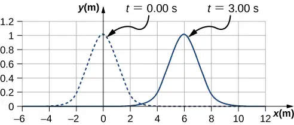
The pulse will move \(\Delta x=6.00\:\text{m}\).
50. A wave is modeled at time \(t=0.00\:\text{s}\) with a wave function that depends on position. The equation is \(y(x)=(0.30\:\text{m})\sin(6.28\:\text{m}^{-1}x)\). The wave travels a distance of 4.00 meters in 0.50 s in the positive x-direction. Write an equation for the wave as a function of position and time.
51. A wave is modeled with the function \(y(x,t)=(0.25\:\text{m})\cos\left( 0.30\:\text{m}^{-1}x-0.90\:\text{s}^{-1}t+\frac{\pi}{3} \right).\) Find the (a) amplitude, (b) wave number, (c) angular frequency, (d) wave speed, (e) initial phase shift, (f) wavelength, and (g) period of the wave.
Answer
a. \(A=0.25\:\text{m};\) b. \(k=0.30\:\text{m}^{-1};\) c. \(\omega=0.90\:\text{s}^{-1};\) d. \(v=3.0\:\text{m/s};\) e. \(\phi=\pi\text{/}3\:\text{rad};\) f. \(\lambda=20.93\:\text{m}\); g. \(T=6.98\:\text{s}\)
52. A surface ocean wave has an amplitude of 0.60 m and the distance from trough to trough is 8.00 m. It moves at a constant wave speed of 1.50 m/s propagating in the positive x-direction. At \(t=0,\) the water displacement at \(x=0\) is zero, and \(v_{y}\) is positive. (a) Assuming the wave can be modeled as a sine wave, write a wave function to model the wave. (b) Use a spreadsheet to plot the wave function at times \(t=0.00\:\text{s}\) and \(t=2.00\:\text{s}\) on the same graph. Verify that the wave moves 3.00 m in those 2.00 s.
53. A wave is modeled by the wave function \(y(x,t)=(0.30\:\text{m})\sin\left[ \frac{2\pi}{4.50\:\text{m}}\left( x-18.00\frac{\text{m}}{\text{s}}t \right) \right].\) What are the amplitude, wavelength, wave speed, period, and frequency of the wave?
Answer
\(A=0.30\:\text{m},\:\lambda=4.50\:\text{m},\:v=18.00\:\text{m/s},\:f=4.00\:\text{Hz},\:T=0.25\:\text{s}\)
54. A transverse wave on a string is described with the wave function \(y(x,t)=(0.50\:\text{cm})\sin(1.57\:\text{m}^{-1}x-6.28\:\text{s}^{-1}t)\). (a) What is the wave velocity of the wave? (b) What is the magnitude of the maximum velocity of the string perpendicular to the direction of the motion?
55. A swimmer in the ocean observes one day that the ocean surface waves are periodic and resemble a sine wave. The swimmer estimates that the vertical distance between the crest and the trough of each wave is approximately 0.45 m, and the distance between each crest is approximately 1.8 m. The swimmer counts that 12 waves pass every two minutes. Determine the simple harmonic wave function that would describes these waves.
Answer
\(y(x,t)=0.23\:\text{m}\:\sin(3.49\:\text{m}^{-1}x-0.63\:\text{s}^{-1}t)\)
56. Consider a wave described by the wave function \(y(x,t)=0.3\:\text{m}\:\sin(2.00\:\text{m}^{-1}x-628.00\:\text{s}^{-1}t).\) (a) How many crests pass by an observer at a fixed location in 2.00 minutes? (b) How far has the wave traveled in that time?
57. Consider two waves defined by the wave functions \(y_{1}(x,t)=0.50\:\text{m}\:\sin\left( \frac{2\pi}{3.00\:\text{m}}x+\frac{2\pi}{4.00\:\text{s}}t \right)\) and \(y_{2}(x,t)=0.50\:\text{m}\:\sin\left( \frac{2\pi}{6.00\:\text{m}}x-\frac{2\pi}{4.00\:\text{s}}t \right).\) What are the similarities and differences between the two waves?
Answer
They have the same angular frequency, frequency, and period. They are traveling in opposite directions and \(y_{2}(x,t)\) has twice the wavelength as \(y_{1}(x,t)\) and is moving at half the wave speed.
58. Consider two waves defined by the wave functions \(y_{1}(x,t)=0.20\:\text{m}\:\sin\left( \frac{2\pi}{6.00\:\text{m}}x-\frac{2\pi}{4.00\:\text{s}}t \right)\) and \(y_{2}(x,t)=0.20\:\text{m}\:\cos\left( \frac{2\pi}{6.00\:\text{m}}x-\frac{2\pi}{4.00\:\text{s}}t \right).\) What are the similarities and differences between the two waves?
59. The speed of a transverse wave on a string is 300.00 m/s, its wavelength is 0.50 m, and the amplitude is 20.00 cm. How much time is required for a particle on the string to move through a distance of 5.00 km?
Answer
Each particle of the medium moves a distance of 4A each period. The period can be found by dividing the velocity by the wavelength: \(t=10.42\:\text{s}\)
16.3 Wave Speed on a Stretched String¶
60. Transverse waves are sent along a 5.00-m-long string with a speed of 30.00 m/s. The string is under a tension of 10.00 N. What is the mass of the string?
61. A copper wire has a density of \(\rho=8920\:\text{kg/m}^{3},\) a radius of 1.20 mm, and a length L. The wire is held under a tension of 10.00 N. Transverse waves are sent down the wire. (a) What is the linear mass density of the wire? (b) What is the speed of the waves through the wire?
Answer
a. \(\mu=0.040\:\text{kg/m;}\) b. \(v=15.75\:\text{m/s}\)
62. A piano wire has a linear mass density of \(\mu=4.95\:\times\:{10}^{-3}\:\text{kg/m}.\) Under what tension must the string be kept to produce waves with a wave speed of 500.00 m/s?
63. A string with a linear mass density of \(\mu=0.0060\:\text{kg/m}\) is tied to the ceiling. A 20-kg mass is tied to the free end of the string. The string is plucked, sending a pulse down the string. Estimate the speed of the pulse as it moves down the string.
Answer
\(v=180\:\text{m/s}\)
64. A cord has a linear mass density of \(\mu=0.0075\:\text{kg/m}\) and a length of three meters. The cord is plucked and it takes 0.20 s for the pulse to reach the end of the string. What is the tension of the string?
65. A string is 3.00 m long with a mass of 5.00 g. The string is held taut with a tension of 500.00 N applied to the string. A pulse is sent down the string. How long does it take the pulse to travel the 3.00 m of the string?
Answer
\(v=547.723\:\text{m/s},\:\Delta t=5.48\:\text{ms}\)
66. Two strings are attached to poles, however the first string is twice as long as the second. If both strings have the same tension and mu, what is the ratio of the speed of the pulse of the wave from the first string to the second string?
67. Two strings are attached to poles, however the first string is twice the linear mass density mu of the second. If both strings have the same tension, what is the ratio of the speed of the pulse of the wave from the first string to the second string?
Answer
0.707
68. Transverse waves travel through a string where the tension equals 7.00 N with a speed of 20.00 m/s. What tension would be required for a wave speed of 25.00 m/s?
69. Two strings are attached between two poles separated by a distance of 2.00 m as shown below, both under the same tension of 600.00 N. String 1 has a linear density of \(\mu_{1}=0.0025\:\text{kg/m}\) and string 2 has a linear mass density of \(\mu_{2}=0.0035\:\text{kg/m}.\) Transverse wave pulses are generated simultaneously at opposite ends of the strings. How much time passes before the pulses pass one another?
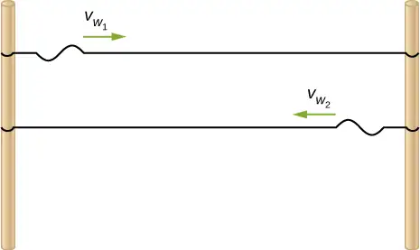
Answer
\(v_{1}t+v_{2}t=2.00\:\text{m},\:t=2.21\:\text{ms}\)
70. Two strings are attached between two poles separated by a distance of 2.00 meters as shown in the preceding figure, both strings have a linear density of \(\mu_{1}=0.0025\:\text{kg/m},\) the tension in string 1 is 600.00 N and the tension in string 2 is 700.00 N. Transverse wave pulses are generated simultaneously at opposite ends of the strings. How much time passes before the pulses pass one another?
71. The note \(E_{4}\) is played on a piano and has a frequency of \(f=393.88.\) If the linear mass density of this string of the piano is \(\mu=0.012\:\text{kg/m}\) and the string is under a tension of 1000.00 N, what is the speed of the wave on the string and the wavelength of the wave?
Answer
\(v=288.68\:\text{m/s},\:\lambda=0.73\:\text{m}\)
72. Two transverse waves travel through a taut string. The speed of each wave is \(v=30.00\:\text{m/s}.\) A plot of the vertical position as a function of the horizontal position is shown below for the time \(t=0.00\:\text{s}.\) (a) What is the wavelength of each wave? (b) What is the frequency of each wave? (c) What is the maximum vertical speed of each string?
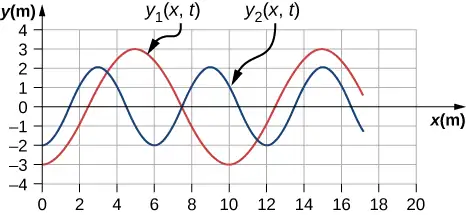
73. A sinusoidal wave travels down a taut, horizontal string with a linear mass density of \(\mu=0.060\:\text{kg/m}\). The maximum vertical speed of the wave is \(v_{y\:\max}=0.30\:\text{cm/s}.\) The wave is modeled with the wave equation \(y(x,t)=A\:\sin(6.00\:\text{m}^{-1}x-24.00\:\text{s}^{-1}t).\) (a) What is the amplitude of the wave? (b) What is the tension in the string?
Answer
a. \(A=0.0125\:\text{cm;}\) b. \(F_{T}=0.96\:\text{N}\)
74. The speed of a transverse wave on a string is \(v=60.00\:\text{m/s}\) and the tension in the string is \(F_{T}=100.00\:\text{N}\). What must the tension be to increase the speed of the wave to \(v=120.00\:\text{m/s?}\)
16.4 Energy and Power of a Wave¶
75. A string of length 5 m and a mass of 90 g is held under a tension of 100 N. A wave travels down the string that is modeled as \(y(x,t)=0.01\:\text{m}\:\sin(15.7\:\text{m}^{-1}x-1170.12\:\text{s}^{-1}t).\) What is the power over one wavelength?
Answer
\(v=74.54\:\text{m/s,}\) \(P_{\lambda}=91.85\:\text{W}\)
76. Ultrasound of intensity \(1.50\:\times\:{10}^{2}\:\text{W/m}^{2}\) is produced by the rectangular head of a medical imaging device measuring 3.00 cm by 5.00 cm. What is its power output?
77. The low-frequency speaker of a stereo set has a surface area of \(A=0.05\:\text{m}^{2}\) and produces 1 W of acoustical power. (a) What is the intensity at the speaker? (b) If the speaker projects sound uniformly in all directions, at what distance from the speaker is the intensity \(0.1\:\text{W/m}^{2}\)?
Answer
a. \(I=20.0\:\text{W/m}^{2};\) b. \(\begin{array}{c} I=\frac{P}{A},\:A=10.0\:\text{m}^{2} \\ A=4\pi r^{2},\:r=0.892\:\text{m} \end{array}\)
78. To increase the intensity of a wave by a factor of 50, by what factor should the amplitude be increased?
79. A device called an insolation meter is used to measure the intensity of sunlight. It has an area of \(100\:\text{cm}^{2}\) and registers 6.50 W. What is the intensity in \(\text{W/m}^{2}\)?
Answer
\(I=650\:\text{W/m}^{2}\)
80. Energy from the Sun arrives at the top of Earth’s atmosphere with an intensity of \(1400\:\text{W/m}^{2}\). How long does it take for \(1.80\:\times\:{10}^{9}\:\text{J}\) to arrive on an area of \(1.00\:\text{m}^{2}\)?
81. Suppose you have a device that extracts energy from ocean breakers in direct proportion to their intensity. If the device produces 10.0 kW of power on a day when the breakers are 1.20 m high, how much will it produce when they are 0.600 m high?
Answer
\(\begin{array}{c} P\propto E\propto I\propto X^{2}\Rightarrow\frac{P_{2}}{P_{1}}={\left( \frac{X_{2}}{X_{1}} \right)}^{2} \\ P_{2}=2.50\:\text{kW} \end{array}\)
82. A photovoltaic array of (solar cells) is \(10.0\text{\%}\) efficient in gathering solar energy and converting it to electricity. If the average intensity of sunlight on one day is \(70.00\:\text{W/m}^{2}\), what area should your array have to gather energy at the rate of 100 W? (b) What is the maximum cost of the array if it must pay for itself in two years of operation averaging 10.0 hours per day? Assume that it earns money at the rate of 9.00 cents per kilowatt-hour.
83. A microphone receiving a pure sound tone feeds an oscilloscope, producing a wave on its screen. If the sound intensity is originally \(2.00\:\times\:{10}^{-5}\:\text{W/m}^{2}\), but is turned up until the amplitude increases by \(30.0\text{\%}\), what is the new intensity?
Answer
\(\begin{array}{c} I\propto X^{2}\Rightarrow\frac{I_{1}}{I_{2}}={\left( \frac{X_{1}}{X_{2}} \right)}^{2}\Rightarrow \\ I_{2}=3.38\:\times\:{10}^{-5}\:\text{W/m}^{2} \end{array}\)
84. A string with a mass of 0.30 kg has a length of 4.00 m. If the tension in the string is 50.00 N, and a sinusoidal wave with an amplitude of 2.00 cm is induced on the string, what must the frequency be for an average power of 100.00 W?
85. The power versus time for a point on a string \((\mu=0.05\:\text{kg/m})\) in which a sinusoidal traveling wave is induced. The wave is modeled with the wave equation \(y(x,t)=A\:\sin(20.93\:\text{m}^{-1}x-\omega t)\). What is the frequency and amplitude of the wave?
Answer
\(f=100.00\:\text{Hz},\:A=1.10\:\text{cm}\)
86. A string is under tension \(F_{T1}\). Energy is transmitted by a wave on the string at rate \(P_{1}\) by a wave of frequency \(f_{1}\). What is the ratio of the new energy transmission rate \(P_{2}\) to \(P_{1}\) if the tension is doubled?
87. A 250-Hz tuning fork is struck and the intensity at the source is \(I_{1}\) at a distance of one meter from the source. (a) What is the intensity at a distance of 4.00 m from the source? (b) How far from the tuning fork is the intensity a tenth of the intensity at the source?
Answer
a. \(I_{2}=0.063I_{1}\); b. \(\begin{array}{ccc} I_{1}4\pi r_{1}^{2} & = & I_{2}4\pi r_{2}^{2} \\ r_{2} & = & 3.16\:\text{m} \end{array}\)
88. A sound speaker is rated at a voltage of \(V=120.00\:\text{V}\) and a current of \(I=10.00\:\text{A}.\) Electrical power consumption is \(P=IV\). To test the speaker, a signal of a sine wave is applied to the speaker. Assuming that the sound wave moves as a spherical wave and that all of the energy applied to the speaker is converted to sound energy, how far from the speaker is the intensity equal to \(3.82\:\text{W/m}^{2}?\)
89. The energy of a ripple on a pond is proportional to the amplitude squared. If the amplitude of the ripple is 0.1 cm at a distance from the source of 6.00 meters, what was the amplitude at a distance of 2.00 meters from the source?
Answer
\(2\pi r_{1}A_{1}^{2}=2\pi r_{2}A_{2}^{2},\:A_{1}={\left( \frac{r_{2}}{r_{1}} \right)}^{1\text{/}2}A_{1}=0.17\:\text{m}\)
16.5 Interference of Waves¶
90. Consider two sinusoidal waves traveling along a string, modeled as \(y_{1}(x,t)=0.3\:\text{m}\:\sin(4\:\text{m}^{-1}x+3\:\text{s}^{-1}t)\) and \(y_{2}(x,t)=0.6\:\text{m}\:\sin(8\:\text{m}^{-1}x-6\:\text{s}^{-1}t).\) What is the height of the resultant wave formed by the interference of the two waves at the position \(x=0.5\:\text{m}\) at time \(t=0.2\:\text{s?}\)
91. Consider two sinusoidal sine waves traveling along a string, modeled as \(y_{1}(x,t)=0.3\:\text{m}\:\sin\left( 4\:\text{m}^{-1}x+3\:\text{s}^{-1}t+\frac{\pi}{3} \right)\) and \(y_{2}(x,t)=0.6\:\text{m}\:\sin(8\:\text{m}^{-1}x-6\:\text{s}^{-1}t).\) What is the height of the resultant wave formed by the interference of the two waves at the position \(x=1.0\:\text{m}\) at time \(t=3.0\:\text{s?}\)
Answer
\(y(x,t)=0.63\:\text{m}\)
92. Consider two sinusoidal sine waves traveling along a string, modeled as \(y_{1}(x,t)=0.3\:\text{m}\:\sin(4\:\text{m}^{-1}x-3\:\text{s}^{-1}t)\) and \(y_{2}(x,t)=0.3\:\text{m}\:\sin(4\:\text{m}^{-1}x+3\:\text{s}^{-1}t).\) What is the wave function of the resulting wave? [Hint: Use the trig identity \(\sin(u\pm v)=\sin\:u\:\cos\:v\pm\:\cos\:u\:\sin\:v\)
93. Two sinusoidal waves are moving through a medium in the same direction, both having amplitudes of 3.00 cm, a wavelength of 5.20 m, and a period of 6.52 s, but one has a phase shift of an angle \(\phi\). What is the phase shift if the resultant wave has an amplitude of 5.00 cm? [Hint: Use the trig identity \(\sin\:u+\sin\:v=2\:\sin\left( \frac{u+v}{2} \right)\cos\left( \frac{u-v}{2} \right)\)
Answer
\(A_{R}=2A\:\cos\left( \frac{\phi}{2} \right),\:\phi=1.17\:\text{rad}\)
94. Two sinusoidal waves are moving through a medium in the positive x-direction, both having amplitudes of 6.00 cm, a wavelength of 4.3 m, and a period of 6.00 s, but one has a phase shift of an angle \(\phi=0.50\:\text{rad}.\) What is the height of the resultant wave at a time \(t=3.15\:\text{s}\) and a position \(x=0.45\:\text{m}\)?
95. Two sinusoidal waves are moving through a medium in the positive x-direction, both having amplitudes of 7.00 cm, a wave number of \(k=3.00\:\text{m}^{-1},\) an angular frequency of \(\omega=2.50\:\text{s}^{-1},\) and a period of 6.00 s, but one has a phase shift of an angle \(\phi=\frac{\pi}{12}\:\text{rad}.\) What is the height of the resultant wave at a time \(t=2.00\:\text{s}\) and a position \(x=0.53\:\text{m?}\)
Answer
\(y_{R}=1.90\:\text{cm}\)
96. Consider two waves \(y_{1}(x,t)\) and \(y_{2}(x,t)\) that are identical except for a phase shift propagating in the same medium. (a)What is the phase shift, in radians, if the amplitude of the resulting wave is 1.75 times the amplitude of the individual waves? (b) What is the phase shift in degrees? (c) What is the phase shift as a percentage of the individual wavelength?
97. Two sinusoidal waves, which are identical except for a phase shift, travel along in the same direction. The wave equation of the resultant wave is \(y_{R}(x,t)=0.70\:\text{m}\:\sin(3.00\:\text{m}^{-1}x-6.28\:\text{s}^{-1}t+\)
\(\pi\text{/}16\:\text{rad}).\) What are the angular frequency, wave number, amplitude, and phase shift of the individual waves?
Answer
\(\begin{array}{ccc} \omega & = & 6.28\:\text{s}^{-1},\:k=3.00\:\text{m}^{-1},\:\phi=\frac{\pi}{8}\:\text{rad,} \\ A_{R} & = & 2A\:\cos\left( \frac{\phi}{2} \right),\:A=0.37\:\text{m} \end{array}\)
98. Two sinusoidal waves, which are identical except for a phase shift, travel along in the same direction. The wave equation of the resultant wave is \(y_{R}(x,t)=0.35\:\text{cm}\:\sin\left( 6.28\:\text{m}^{-1}x-1.57\:\text{s}^{-1}t+\frac{\pi}{4} \right).\) What are the period, wavelength, amplitude, and phase shift of the individual waves?
99. Consider two wave functions, \(y_{1}(x,t)=4.00\:\text{m}\:\sin(\pi\:\text{m}^{-1}x-\pi\:\text{s}^{-1}t)\) and \(y_{2}(x,t)=4.00\:\text{m}\:\sin\left( \pi\:\text{m}^{-1}x-\pi\:\text{s}^{-1}t+\frac{\pi}{3} \right).\) (a) Using a spreadsheet, plot the two wave functions and the wave that results from the superposition of the two wave functions as a function of position \((0.00\le x\le 6.00\:\text{m})\) for the time \(t=0.00\:\text{s}.\) (b) What are the wavelength and amplitude of the two original waves? (c) What are the wavelength and amplitude of the resulting wave?
Answer
a.
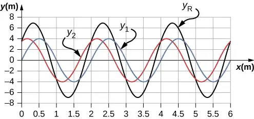
;b. \(\lambda=2.0\:\text{m},A=4\:\text{m}\); c. \(\lambda_{R}=2.0\:\text{m},A_{R}=6.93\:\text{m}\)
100. Consider two wave functions, \(y_{2}(x,t)=2.00\:\text{m}\:\sin\left( \frac{\pi}{2}\text{m}^{-1}x-\frac{\pi}{3}\text{s}^{-1}t \right)\) and \(y_{2}(x,t)=2.00\:\text{m}\:\sin\left( \frac{\pi}{2}\text{m}^{-1}x-\frac{\pi}{3}\text{s}^{-1}t+\frac{\pi}{6} \right).\) (a) Verify that \(y_{R}=2A\:\cos\left( \frac{\phi}{2} \right)\sin\left( kx-\omega t+\frac{\phi}{2} \right)\) is the solution for the wave that results from a superposition of the two waves. Make a column for x, \(y_{1}\), \(y_{2}\), \(y_{1}+y_{2}\), and \(y_{R}=2A\:\cos\left( \frac{\phi}{2} \right)\sin\left( kx-\omega t+\frac{\phi}{2} \right).\) Plot four waves as a function of position where the range of x is from 0 to 12 m.
101. Consider two wave functions that differ only by a phase shift, \(y_{1}(x,t)=A\:\cos(kx-\omega t)\) and \(y_{2}(x,t)=A\:\cos(kx-\omega t+\phi).\) Use the trigonometric identities \(\cos\:u+\cos\:v=2\:\cos\left( \frac{u-v}{2} \right)\cos\left( \frac{u+v}{2} \right)\) and \(\cos(-\theta)=\cos(\theta)\) to find a wave equation for the wave resulting from the superposition of the two waves. Does the resulting wave function come as a surprise to you?
Answer
\(y_{R}(x,t)=2A\:\cos\left( \frac{\phi}{2} \right)\cos\left( kx-\omega t+\frac{\phi}{2} \right);\) The result is not surprising because \(\cos(\theta)=\sin\left( \theta+\frac{\pi}{2} \right).\)
16.6 Standing Waves and Resonance¶
102. A wave traveling on a Slinky® that is stretched to 4 m takes 2.4 s to travel the length of the Slinky and back again. (a) What is the speed of the wave? (b) Using the same Slinky stretched to the same length, a standing wave is created which consists of three antinodes and four nodes. At what frequency must the Slinky be oscillating?
103. A 2-m long string is stretched between two supports with a tension that produces a wave speed equal to \(v_{w}=50.00\:\text{m/s}.\) What are the wavelength and frequency of the first three modes that resonate on the string?
Answer
\(\begin{array}{c} \lambda_{n}=\frac{2.00}{n}L,\quad f_{n}=\frac{v}{\lambda_{n}} \\ \lambda_{1}=4.00\:\text{m},\quad f_{1}=12.5\:\text{Hz} \\ \lambda_{2}=2.00\:\text{m},\quad f_{2}=25.00\:\text{Hz} \\ \lambda_{3}=1.33\:\text{m},\quad f_{3}=37.59\:\text{Hz} \end{array}\)
104. Consider the experimental setup shown below. The length of the string between the string vibrator and the pulley is \(L=1.20\:\text{m}.\) The linear density of the string is \(\mu=0.006\:\text{kg/m}.\) The string vibrator can oscillate at any frequency. The hanging mass is 2.00 kg. (a)What are the wavelength and frequency of \(n=6\) mode? (b) The string oscillates the air around the string. What is the wavelength of the sound if the speed of the sound is \(v_{s}=343.00\:\text{m/s?}\)
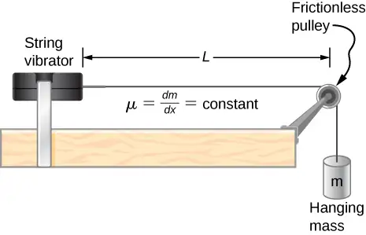
105. A cable with a linear density of \(\mu=0.02\:\text{kg/m}\) is hung from telephone poles. The tension in the cable is 500.00 N. The distance between poles is 20 meters. The wind blows across the line, causing the cable resonate. A standing waves pattern is produced that has 4.5 wavelengths between the two poles. The speed of sound at the current temperature \(T=20{}^{\circ}\text{C}\) is \(343.00\:\text{m/s}\). What are the frequency and wavelength of the hum?
Answer
\(\begin{array}{c} v=158.11\:\text{m/s,}\quad\lambda=4.44\:\text{m,}\quad f=35.61\:\text{Hz} \\ \lambda_{s}=9.63\:\text{m} \end{array}\)
106. Consider a rod of length L, mounted in the center to a support. A node must exist where the rod is mounted on a support, as shown below. Draw the first two normal modes of the rod as it is driven into resonance. Label the wavelength and the frequency required to drive the rod into resonance.
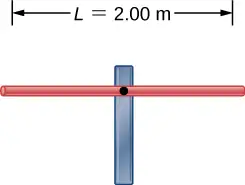
107. Consider two wave functions \(y(x,t)=0.30\:\text{cm}\:\sin(3\:\text{m}^{-1}x-4\:\text{s}^{-1}t)\) and \(y(x,t)=0.30\:\text{cm}\:\sin(3\:\text{m}^{-1}x+4\:\text{s}^{-1}t)\). Write a wave function for the resulting standing wave.
Answer
\(y(x,t)=[0.60\:\text{cm}\:\sin(3\:\text{m}^{-1}x)]\cos(4\:\text{s}^{-1}t)\)
108. A 2.40-m wire has a mass of 7.50 g and is under a tension of 160 N. The wire is held rigidly at both ends and set into oscillation. (a) What is the speed of waves on the wire? The string is driven into resonance by a frequency that produces a standing wave with a wavelength equal to 1.20 m. (b) What is the frequency used to drive the string into resonance?
109. A string with a linear mass density of 0.0062 kg/m and a length of 3.00 m is set into the \(n=100\) mode of resonance. The tension in the string is 20.00 N. What is the wavelength and frequency of the wave?
Answer
\(\begin{array}{c} \lambda_{100}=0.06\:\text{m} \\ \\ v=56.8\:\text{m/s,}\quad f_{n}=nf_{1},\quad n=1,2,3,4,5... \\ f_{100}=947\:\text{Hz} \end{array}\)
110. A string with a linear mass density of 0.0075 kg/m and a length of 6.00 m is set into the \(n=4\) mode of resonance by driving with a frequency of 100.00 Hz. What is the tension in the string?
111. Two sinusoidal waves with identical wavelengths and amplitudes travel in opposite directions along a string producing a standing wave. The linear mass density of the string is \(\mu=0.075\:\text{kg/m}\) and the tension in the string is \(F_{T}=5.00\:\text{N}.\) The time interval between instances of total destructive interference is \(\Delta t=0.13\:\text{s}.\) What is the wavelength of the waves?
Answer
\(T=2\Delta t,\quad v=\frac{\lambda}{T},\quad\lambda=2.12\:\text{m}\)
112. A string, fixed on both ends, is 5.00 m long and has a mass of 0.15 kg. The tension if the string is 90 N. The string is vibrating to produce a standing wave at the fundamental frequency of the string. (a) What is the speed of the waves on the string? (b) What is the wavelength of the standing wave produced? (c) What is the period of the standing wave?
113. A string is fixed at both end. The mass of the string is 0.0090 kg and the length is 3.00 m. The string is under a tension of 200.00 N. The string is driven by a variable frequency source to produce standing waves on the string. Find the wavelengths and frequency of the first four modes of standing waves.
Answer
\(\begin{array}{c} \lambda_{1}=6.00\:\text{m},\quad\lambda_{2}=3.00\:\text{m},\quad\lambda_{3}=2.00\:\text{m},\quad\lambda_{4}=1.50\:\text{m} \\ v=258.20\:\text{m/s}=\lambda f \\ f_{1}=43.03\:\text{Hz},\quad f_{2}=86.07\:\text{Hz},\quad f_{3}=129.10\:\text{Hz},\quad f_{4}=172.13\:\text{Hz} \end{array}\)
114. The frequencies of two successive modes of standing waves on a string are 258.36 Hz and 301.42 Hz. What is the next frequency above 100.00 Hz that would produce a standing wave?
115. A string is fixed at both ends to supports 3.50 m apart and has a linear mass density of \(\mu=0.005\:\text{kg/m}.\) The string is under a tension of 90.00 N. A standing wave is produced on the string with six nodes and five antinodes. What are the wave speed, wavelength, frequency, and period of the standing wave?
Answer
\(v=134.16\:\text{ms},\lambda=1.4\:\text{m},f=95.83\:\text{Hz},T=0.0104\:\text{s}\)
116. Sine waves are sent down a 1.5-m-long string fixed at both ends. The waves reflect back in the opposite direction. The amplitude of the wave is 4.00 cm. The propagation velocity of the waves is 175 m/s. The \(n=6\) resonance mode of the string is produced. Write an equation for the resulting standing wave.
Additional Problems¶
117. Ultrasound equipment used in the medical profession uses sound waves of a frequency above the range of human hearing. If the frequency of the sound produced by the ultrasound machine is \(f=30\:\text{kHz,}\) what is the wavelength of the ultrasound in bone, if the speed of sound in bone is \(v=3000\:\text{m/s?}\)
Answer
\(\lambda=0.10\:\text{m}\)
118. Shown below is the plot of a wave function that models a wave at time \(t=0.00\:\text{s}\) and \(t=2.00\:\text{s}\). The dotted line is the wave function at time \(t=0.00\:\text{s}\) and the solid line is the function at time \(t=2.00\:\text{s}\). Estimate the amplitude, wavelength, velocity, and period of the wave.
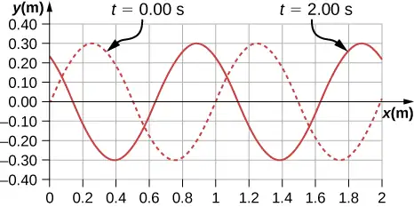
119. The speed of light in air is approximately \(v=3.00\:\times\:{10}^{8}\:\text{m/s}\) and the speed of light in glass is \(v=2.00\:\times\:{10}^{8}\:\text{m/s}\). A red laser with a wavelength of \(\lambda=633.00\:\text{nm}\) shines light incident of the glass, and some of the red light is transmitted to the glass. The frequency of the light is the same for the air and the glass. (a) What is the frequency of the light? (b) What is the wavelength of the light in the glass?
Answer
a. \(f=4.74\:\times\:{10}^{14}\:\text{Hz;}\) b. \(\lambda=422\:\text{nm}\)
120. A radio station broadcasts radio waves at a frequency of 101.7 MHz. The radio waves move through the air at approximately the speed of light in a vacuum. What is the wavelength of the radio waves?
121. A sunbather stands waist deep in the ocean and observes that six crests of periodic surface waves pass each minute. The crests are 16.00 meters apart. What is the wavelength, frequency, period, and speed of the waves?
Answer
\(\lambda=16.00\:\text{m},\quad f=0.10\:\text{Hz},\quad T=10.00\:\text{s},\quad v=1.6\:\text{m/s}\)
122. A tuning fork vibrates producing sound at a frequency of 512 Hz. The speed of sound of sound in air is \(v=343.00\:\text{m/s}\) if the air is at a temperature of \(20.00{}^{\circ}\text{C}\). What is the wavelength of the sound?
123. A motorboat is traveling across a lake at a speed of \(v_{b}=15.00\:\text{m/s}.\) The boat bounces up and down every 0.50 s as it travels in the same direction as a wave. It bounces up and down every 0.30 s as it travels in a direction opposite the direction of the waves. What is the speed and wavelength of the wave?
Answer
\(\lambda=(v_{b}+v)t_{b},\quad v=3.75\:\text{m/s,}\quad\lambda=3.00\:\text{m}\)
124. Use the linear wave equation to show that the wave speed of a wave modeled with the wave function \(y(x,t)=0.20\:\text{m}\:\sin(3.00\:\text{m}^{-1}x+6.00\:\text{s}^{-1}t)\) is \(v=2.00\:\text{m/s}.\) What are the wavelength and the speed of the wave?
125. Given the wave functions \(y_{1}(x,t)=A\:\sin(kx-\omega t)\) and \(y_{2}(x,t)=A\:\sin(kx-\omega t+\phi)\) with \(\phi\neq\frac{\pi}{2}\), show that \(y_{1}(x,t)+y_{2}(x,t)\) is a solution to the linear wave equation with a wave velocity of \(v=\frac{\omega}{k}.\)
Answer
\(\begin{array}{c} \frac{\partial^{2}(y_{1}+y_{2})}{\partial t^{2}}=-A\omega^{2}\:\sin(kx-\omega t)-A\omega^{2}\:\sin(kx-\omega t+\phi) \\ \frac{\partial^{2}(y_{1}+y_{2})}{\partial x^{2}}=-Ak^{2}\:\sin(kx-\omega t)-Ak^{2}\:\sin(kx-\omega t+\phi) \\ \frac{\partial^{2}y(x,t)}{\partial x^{2}}=\frac{1}{v^{2}}\:\frac{\partial^{2}y(x,t)}{\partial t^{2}} \\ \\ -A\omega^{2}\:\sin(kx-\omega t)-A\omega^{2}\:\sin(kx-\omega t+\phi)=\left( \frac{1}{v^{2}} \right)(-Ak^{2}\:\sin(kx-\omega t)-Ak^{2}\:\sin(kx-\omega t+\phi)) \\ v=\frac{\omega}{k} \end{array}\)
126. A transverse wave on a string is modeled with the wave function \(y(x,t)=0.10\:\text{m}\:\sin(0.15\:\text{m}^{-1}x+1.50\:\text{s}^{-1}t+0.20)\). (a) Find the wave velocity. (b) Find the position in the y-direction, the velocity perpendicular to the motion of the wave, and the acceleration perpendicular to the motion of the wave, of a small segment of the string centered at \(x=0.40\:\text{m}\) at time \(t=5.00\:\text{s}.\)
127. A sinusoidal wave travels down a taut, horizontal string with a linear mass density of \(\mu=0.060\:\text{kg/m}.\) The magnitude of maximum vertical acceleration of the wave is \(a_{y\:\max}=0.90\:\text{m/s}^{2}\) and the amplitude of the wave is 0.40 m. The string is under a tension of \(F_{T}=600.00\:\text{N}\). The wave moves in the negative x-direction. Write an equation to model the wave.
Answer
\(y(x,t)=0.40\:\sin(0.15\:\text{x}+1.5\:t)\)
128. A transverse wave on a string \((\mu=0.0030\:\text{kg/m})\) is described with the equation \(y(x,t)=0.30\:\text{m}\:\sin\left( \frac{2\pi}{4.00\:\text{m}}\left( x-16.00\frac{\text{m}}{\text{s}}t \right) \right).\) What is the tension under which the string is held taut?
129. A transverse wave on a horizontal string \((\mu=0.0060\:\text{kg/m})\) is described with the equation \(y(x,t)=0.30\:\text{m}\:\sin\left( \frac{2\pi}{4.00\:\text{m}}(x-v_{w}t) \right).\) The string is under a tension of 300.00 N. What are the wave speed, wave number, and angular frequency of the wave?
Answer
\(v=223.61\:\text{m/s},\:k=1.57\:\text{m}^{-1},\:\omega=351.07\:\text{s}^{-1}\)
130. A student holds an inexpensive sonic range finder and uses the range finder to find the distance to the wall. The sonic range finder emits a sound wave. The sound wave reflects off the wall and returns to the range finder. The round trip takes 0.012 s. The range finder was calibrated for use at room temperature \(T=20{}^{\circ}\text{C}\), but the temperature in the room is actually \(T=23{}^{\circ}\text{C}.\) Assuming that the timing mechanism is perfect, what percentage of error can the student expect due to the calibration?
131. A wave on a string is driven by a string vibrator, which oscillates at a frequency of 100.00 Hz and an amplitude of 1.00 cm. The string vibrator operates at a voltage of 12.00 V and a current of 0.20 A. The power consumed by the string vibrator is \(P=IV\). Assume that the string vibrator is \(90\text{\%}\) efficient at converting electrical energy into the energy associated with the vibrations of the string. The string is 3.00 m long, and is under a tension of 60.00 N. What is the linear mass density of the string?
Answer
\(\begin{array}{c} P=\frac{1}{2}A^{2}{(2\pi f)}^{2}\sqrt{\mu F_{T}} \\ \mu=2.00\:\times\:{10}^{-4}\:\text{kg/m} \end{array}\)
132. A traveling wave on a string is modeled by the wave equation \(y(x,t)=3.00\:\text{cm}\:\sin(8.00\:\text{m}^{-1}x+100.00\:\text{s}^{-1}t).\) The string has a linear mass density of \(\mu=0.00800\:\text{kg/m}.\) What is the average power transferred by the wave on the string?
133. A transverse wave on a string has a wavelength of 5.0 m, a period of 0.02 s, and an amplitude of 1.5 cm. The average power transferred by the wave is 5.00 W. What is the tension in the string?
Answer
\(P=\frac{1}{2}\mu A^{2}\omega^{2}\frac{\lambda}{T},\:\mu=0.0018\:\text{kg/m}\)
\(F_{T}=v^{2}\mu={\left( \frac{\lambda}{T} \right)}^{2}\:\mu=110\:\text{N}\)
134. (a) What is the intensity of a laser beam used to burn away cancerous tissue that, when \(90.0\text{\%}\) absorbed, puts 500.0 J of energy into a circular spot 2.00 mm in diameter in 4.00 s? (b) Discuss how this intensity compares to the average intensity of sunlight (about \(1\text{kW}/\text{m}^{2}\)) and the implications that would have if the laser beam entered your eye. Note how your answer depends on the time duration of the exposure.
135. Consider two periodic wave functions, \(y_{1}(x,t)=A\:\sin(kx-\omega t)\) and \(y_{2}(x,t)=A\:\sin(kx-\omega t+\phi).\) (a) For what values of \(\phi\) will the wave that results from a superposition of the wave functions have an amplitude of 2A? (b) For what values of \(\phi\) will the wave that results from a superposition of the wave functions have an amplitude of zero?
Answer
a. \(A_{R}=2A\:\cos\left( \frac{\phi}{2} \right),\:\cos\left( \frac{\phi}{2} \right)=1,\:\phi=0,2\pi,4\pi{,}...\); b. \(A_{R}=2A\:\cos\left( \frac{\phi}{2} \right),\:\cos\left( \frac{\phi}{2} \right)=0,\:\phi=0,\pi,3\pi,5\pi...\)
136. Consider two periodic wave functions, \(y_{1}(x,t)=A\:\sin(kx-\omega t)\) and \(y_{2}(x,t)=A\:\cos(kx-\omega t+\phi)\). (a) For what values of \(\phi\) will the wave that results from a superposition of the wave functions have an amplitude of 2A? (b) For what values of \(\phi\) will the wave that results from a superposition of the wave functions have an amplitude of zero?
137. A trough with dimensions 10.00 meters by 0.10 meters by 0.10 meters is partially filled with water. Small-amplitude surface water waves are produced from both ends of the trough by paddles oscillating in simple harmonic motion. The height of the water waves are modeled with two sinusoidal wave equations, \(y_{1}(x,t)=0.3\:\text{m}\:\sin(4\:\text{m}^{-1}x-3\:\text{s}^{-1}t)\) and \(y_{2}(x,t)=0.3\:\text{m}\:\cos\left( 4\:\text{m}^{-1}x+3\:\text{s}^{-1}t-\frac{\pi}{2} \right).\) What is the wave function of the resulting wave after the waves reach one another and before they reach the end of the trough (i.e., assume that there are only two waves in the trough and ignore reflections)? Use a spreadsheet to check your results. (Hint: Use the trig identities \(\sin(u\pm v)=\sin\:u\:\cos\:v\pm\cos\:u\:\sin\:v\) and \(\cos(u\pm v)=\cos\:u\:\cos\:v\mp\sin\:u\:\sin\:v)\)
Answer
\(y_{R}(x,t)=0.6\:\text{m}\:\sin(4\:\text{m}^{-1}x)\cos(3\:\text{s}^{-1}t)\)
138. A seismograph records the S- and P-waves from an earthquake 20.00 s apart. If they traveled the same path at constant wave speeds of \(v_{S}=4.00\:\text{km/s}\) and \(v_{P}=7.50\:\text{km/s},\) how far away is the epicenter of the earthquake?
139. Consider what is shown below. A 20.00-kg mass rests on a frictionless ramp inclined at \(45{}^{\circ}\). A string with a linear mass density of \(\mu=0.025\:\text{kg/m}\) is attached to the 20.00-kg mass. The string passes over a frictionless pulley of negligible mass and is attached to a hanging mass (m). The system is in static equilibrium. A wave is induced on the string and travels up the ramp. (a) What is the mass of the hanging mass (m)? (b) At what wave speed does the wave travel up the string?
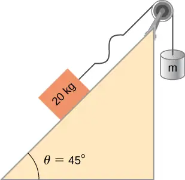
Answer
a. \(\begin{array}{c} (1)F_{T}-20.00\:\text{kg}(9.80\:\text{m/s}^{2})\cos\:45{}^{\circ}=0 \\ (2)m(9.80\:\text{m/s}^{2})-F_{T}=0 \\ m=14.14\:\text{kg} \end{array}\); b. \(\begin{array}{ccc} F_{T} & = & 138.57\:\text{N} \\ v & = & 74.45\:\text{m/s} \end{array}\)
140. Consider the superposition of three wave functions \(y(x,t)=3.00\:\text{cm}\:\sin(2\:\text{m}^{-1}x-3\:\text{s}^{-1}t),\) \(y(x,t)=3.00\:\text{cm}\:\sin(6\:\text{m}^{-1}x+3\:\text{s}^{-1}t),\) and \(y(x,t)=3.00\:\text{cm}\:\sin(2\:\text{m}^{-1}x-4\:\text{s}^{-1}t).\) What is the height of the resulting wave at position \(x=3.00\:\text{m}\) at time \(t=10.0\:\text{s?}\)
141. A string has a mass of 150 g and a length of 3.4 m. One end of the string is fixed to a lab stand and the other is attached to a spring with a spring constant of \(k_{s}=100\:\text{N/m}.\) The free end of the spring is attached to another lab pole. The tension in the string is maintained by the spring. The lab poles are separated by a distance that stretches the spring 2.00 cm. The string is plucked and a pulse travels along the string. What is the propagation speed of the pulse?
Answer
\(F_{T}=2\:\text{N,}\:v=6.73\:\text{m/s}\)
142. A standing wave is produced on a string under a tension of 70.0 N by two sinusoidal transverse waves that are identical, but moving in opposite directions. The string is fixed at \(x=0.00\:\text{m}\) and \(x=10.00\:\text{m}.\) Nodes appear at \(x=0.00\:\text{m,}\) 2.00 m, 4.00 m, 6.00 m, 8.00 m, and 10.00 m. The amplitude of the standing wave is 3.00 cm. It takes 0.10 s for the antinodes to make one complete oscillation. (a) What are the wave functions of the two sine waves that produce the standing wave? (b) What are the maximum velocity and acceleration of the string, perpendicular to the direction of motion of the transverse waves, at the antinodes?
143. A string with a length of 4 m is held under a constant tension. The string has a linear mass density of \(\mu=0.006\:\text{kg/m}.\) Two resonant frequencies of the string are 400 Hz and 480 Hz. There are no resonant frequencies between the two frequencies. (a) What are the wavelengths of the two resonant modes? (b) What is the tension in the string?
Answer
a. \(\begin{array}{c} f_{n}=\frac{nv}{2L},\:v=\frac{2Lf_{n+1}}{n+1},\:\frac{n+1}{n}=\frac{2Lf_{n+1}}{2Lf_{n}},\:1+\frac{1}{n}=1.2,\:n=5 \\ \lambda_{n}=\frac{2}{n}L,\:\lambda_{5}=1.6\:\text{m},\:\lambda_{6}=1.33\:\text{m} \end{array}\); b. \(F_{T}=245.76\:\text{N}\)
Challenge Problems¶
144. A copper wire has a radius of \(200\:\text{μm}\) and a length of 5.0 m. The wire is placed under a tension of 3000 N and the wire stretches by a small amount. The wire is plucked and a pulse travels down the wire. What is the propagation speed of the pulse? (Assume the temperature does not change: \(\left( \rho=8.96\frac{\text{g}}{\text{cm}^{3}},Y=1.1\:\times\:{10}^{11}\frac{\text{N}}{\text{m}} \right).)\)
145. A pulse moving along the x axis can be modeled as the wave function \(y(x,t)=4.00\:\text{m}e^{-{\left( \frac{x+(2.00\:\text{m/s})t}{1.00\:\text{m}} \right)}^{2}}.\) (a)What are the direction and propagation speed of the pulse? (b) How far has the wave moved in 3.00 s? (c) Plot the pulse using a spreadsheet at time \(t=0.00\:\text{s}\) and \(t=3.00\:\text{s}\) to verify your answer in part (b).
Answer
a. Moves in the negative x direction at a propagation speed of \(v=2.00\:\text{m/s}\). b. \(\Delta x=-6.00\:\text{m;}\) c.
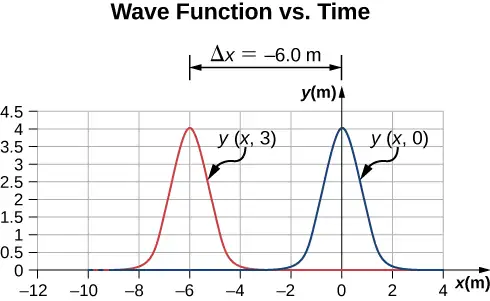
146. A string with a linear mass density of \(\mu=0.0085\:\text{kg/m}\) is fixed at both ends. A 5.0-kg mass is hung from the string, as shown below. If a pulse is sent along section A, what is the wave speed in section A and the wave speed in section B?
![A string is supported at both ends. The left support is lower than the right support. A mass of 5 kg is suspended from its center. The section of string from the left support to the center is horizontal and is labeled A. The section of string from the right support to the centre is labeled B. It makes an angle of 35 degrees with the horizontal. Arrows labeled F subscript A and F subscript B originate from the center of the string and point along the string towards the left support and the right support respectively.](img/cnx-uphysics-16-06-chal-2.webp)
147. Consider two wave functions \(y_{1}(x,t)=A\:\sin(kx-\omega t)\) and \(y_{2}(x,t)=A\:\sin(kx+\omega t+\phi)\). What is the wave function resulting from the interference of the two wave? (Hint: \(\sin(\alpha\pm\beta)=\sin\:\alpha\:\cos\:\beta\pm\cos\:\alpha\:\sin\:\beta\) and \(\phi=\frac{\phi}{2}+\frac{\phi}{2}\).)
Answer
\(\begin{array}{c} \sin(kx-\omega t)=\sin\left( kx+\frac{\phi}{2} \right)\cos\left( \omega t+\frac{\phi}{2} \right)-\cos\left( kx+\frac{\phi}{2} \right)\sin\left( \omega t+\frac{\phi}{2} \right) \\ \sin(kx-\omega t+\phi)=\sin\left( kx+\frac{\phi}{2} \right)\cos\left( \omega t+\frac{\phi}{2} \right)+\cos\left( kx+\frac{\phi}{2} \right)\sin\left( \omega t+\frac{\phi}{2} \right) \\ \sin(kx-\omega t)+\sin(kx+\omega t+\phi)=2\:\sin\left( kx+\frac{\phi}{2} \right)\cos\left( \omega t+\frac{\phi}{2} \right) \\ y_{R}=2\:A\:\sin\left( kx+\frac{\phi}{2} \right)\cos\left( \omega t+\frac{\phi}{2} \right) \end{array}\)
148. The wave function that models a standing wave is given as \(y_{R}(x,t)=6.00\:\text{cm}\:\sin(3.00\:\text{m}^{-1}x+1.20\:\text{rad})\) \(\cos(6.00\:\text{s}^{-1}t+1.20\:\text{rad})\). What are two wave functions that interfere to form this wave function? Plot the two wave functions and the sum of the sum of the two wave functions at \(t=1.00\:\text{s}\) to verify your answer.
149. Consider two wave functions \(y_{1}(x,t)=A\:\sin(kx-\omega t)\) and \(y_{2}(x,t)=A\:\sin(kx+\omega t+\phi)\). The resultant wave form when you add the two functions is \(y_{R}=2A\:\sin\left( kx+\frac{\phi}{2} \right)\cos\left( \omega t+\frac{\phi}{2} \right).\) Consider the case where \(A=0.03\:\text{m}^{-1},\) \(k=1.26\:\text{m}^{-1},\) \(\omega=\pi\:\text{s}^{-1}\), and \(\phi=\frac{\pi}{10}\). (a) Where are the first three nodes of the standing wave function starting at zero and moving in the positive x direction? (b) Using a spreadsheet, plot the two wave functions and the resulting function at time \(t=1.00\:\text{s}\) to verify your answer.
Answer
\(\begin{array}{c} \sin\left( kx+\frac{\phi}{2} \right)=0,\:kx+\frac{\phi}{2}=0,\pi,2\pi,\:1.26\:\text{m}^{-1}x+\frac{\pi}{20}=\pi,2\pi,3\pi \\ x=2.37\:\text{m},4.86\:\text{m},7.35\:\text{m} \end{array}\);
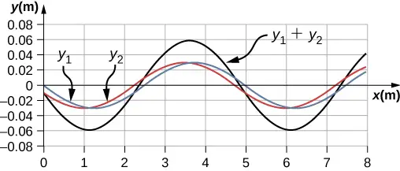
Adapted from University Physics Volume 1 by OpenStax, licensed under CC BY 4.0. Access the original for free at openstax.org. Changes: converted to the web reading format of The Open Book Project.